سبک معماری رویدادمحور (event-driven architecture یا EDA) سبکی محبوب، توزیعشده و ناهمگام است که برای ساختن برنامههایی با مقیاسپذیری و کارایی بسیار بالا به کار میرود. این سبک انطباقپذیریِ چشمگیری نیز دارد و هم برای برنامههای کوچک و هم برای برنامههای بزرگ و پیچیده مناسب است. معماری رویدادمحور از مؤلفههای پردازش رویدادِ جدا از هم تشکیل میشود که بهصورت ناهمگام رویدادها را برمیانگیزند و به آنها پاسخ میدهند. میتوان از آن بهعنوان یک سبک معماریِ مستقل استفاده کرد یا آن را درون سبکهای معماری دیگر جای داد (مانند معماری میکروسرویسِ رویدادمحور).
بسیاری از توسعهدهندگان و معماران نرمافزار EDA را بیشتر یک الگوی معماری میدانند تا یک سبک معماری. ما با این دیدگاه موافق نیستیم. نویسندگان این کتاب سیستمهای کاملی ساختهاند که تنها بر EDA تکیه دارند و به همین دلیل بر این باوریم که EDA در درجهٔ نخست یک سبک معماری است. هرچند میتوان EDA را در سبکهای معماری دیگر، مانند میکروسرویسها و معماری مبتنی بر فضا، به کار برد و معماریهای ترکیبی (hybrid architectures) پدید آورد، EDA در هستهٔ خود همچنان شیوهای برای طراحی سیستمهای پیچیده است.
بیشتر برنامهها از چیزی پیروی میکنند که مدل درخواستمحور (request-based model) نامیده میشود؛ چنانکه در شکل ۱۵-۱ نشان داده شده است. برای نمونه، وقتی مشتری تاریخچهٔ سفارشهای شش ماه گذشتهٔ خود را درخواست میکند، این درخواست نخست به دست یک هماهنگکنندهٔ درخواست (request orchestrator) میرسد. هماهنگکنندهٔ درخواست معمولاً یک رابط کاربری است، اما میتوان آن را از راه یک لایهٔ API، سرویسهای ارکستراسیون، هابهای رویداد (event hubs)، یک گذرگاه رویداد (event bus) یا یک هاب یکپارچهسازی (integration hub) نیز پیادهسازی کرد. نقش آن این است که درخواست را بهصورت قطعی و همگام به پردازندههای درخواستِ (request processors) گوناگون هدایت کند. این پردازندهها درخواست را با بازیابی و بهروزرسانیِ اطلاعات مشتری در پایگاهداده پردازش میکنند. بازیابیِ اطلاعات تاریخچهٔ سفارش، درخواستی دادهمحور و قطعی است که در بافتی مشخص به سیستم فرستاده میشود، نه رویدادی که سیستم باید به آن واکنش نشان دهد؛ به همین دلیل، این یک مدل درخواستمحور است.
در مقابل، مدل رویدادمحور (event-based model) با انجامدادنِ کنشی به یک رویداد مشخص واکنش نشان میدهد. برای نمونه، ثبت پیشنهاد قیمت در یک حراج آنلاین برای یک کالای مشخص را در نظر بگیرید. پیشنهاددهندهای که پیشنهاد خود را ثبت میکند، درخواستی به سیستم نمیفرستد، بلکه رویدادی را آغاز میکند که پس از اعلام قیمت درخواستیِ فعلی رخ میدهد. سیستم باید با مقایسهٔ این پیشنهاد با پیشنهادهای دیگری که همزمان رسیدهاند و تعیین بالاترین پیشنهاددهندهٔ فعلی، به آن رویداد پاسخ دهد.
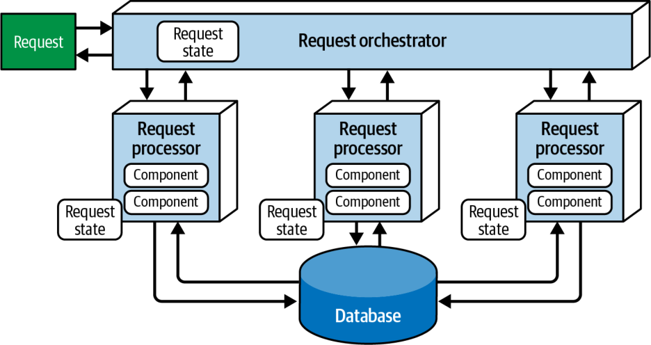
شکل ۱۵-۱. مدل درخواستمحور
توپولوژی
معماری رویدادمحور از ارتباط ناهمگامِ بفرستوفراموشکن (fire-and-forget) بهره میگیرد که در آن، سرویسها رویدادهایی را برمیانگیزند و سرویسهای دیگر به آن رویدادها پاسخ میدهند. چهار مؤلفهٔ اصلیِ معماری در توپولوژی این سبک عبارتاند از: رویداد آغازگر (initiating event)، کارگزار رویداد (event broker)، پردازندهٔ رویداد (event processor) که معمولاً صرفاً سرویس نامیده میشود، و رویداد مشتق (derived event).
رویداد آغازگر رویدادی است که کل جریان رویداد را به راه میاندازد. این رویداد ممکن است ساده باشد، مانند ثبت پیشنهاد قیمت در یک حراج آنلاین، یا پیچیدهتر، مانند اعمال بهروزرسانیها در سیستم مزایای درمانی هنگامی که کارمندی ازدواج میکند. رویداد آغازگر برای پردازش به یک کانال رویداد (event channel) در کارگزار رویداد فرستاده میشود. یک پردازندهٔ رویدادِ واحد، رویداد آغازگر را از کارگزار رویداد میپذیرد و پردازش آن را آغاز میکند.
پردازندهٔ رویدادی که رویداد آغازگر را پذیرفته است، وظیفهٔ مشخصی را که به پردازش آن رویداد مربوط است انجام میدهد (مانند ثبت پیشنهاد قیمت برای یک کالای حراجی)، سپس با برانگیختنِ چیزی که رویداد مشتق نامیده میشود و فرستادنش به یک کارگزار رویداد، کاری را که انجام داده است بهصورت ناهمگام به آگاهیِ بقیهٔ سیستم میرساند. پردازندههای رویدادِ دیگر به رویداد مشتق پاسخ میدهند، بر پایهٔ آن پردازش مشخصی انجام میدهند و سپس کاری را که کردهاند از راه رویدادهای مشتقِ تازه اعلام میکنند. این فرایند تا زمانی ادامه مییابد که همهٔ پردازندههای رویداد بیکار شوند و همهٔ رویدادهای مشتق پردازش شده باشند. شکل ۱۵-۲ این جریان پردازش رویداد را نشان میدهد.
شکل ۱۵-۲. توپولوژیِ پایهٔ معماری رویدادمحور
مؤلفهٔ کارگزار رویداد معمولاً فدراتیو است (یعنی چندین نمونهٔ خوشهبندیشدهٔ مبتنی بر حوزه دارد). هر کارگزارِ فدراتیو همهٔ کانالهای رویداد (مانند صفها و موضوعها) را در بر دارد که در جریان رویدادِ (یعنی کل گردشکارِ پردازش رویداد) آن حوزهٔ مشخص به کار میروند. به دلیل ماهیتِ جدا از هم، ناهمگام و پخشیِ بفرستوفراموشکنِ این سبک معماری، توپولوژی کارگزار از موضوعها، مبادلهگرهای موضوعی (topic exchanges) (در مورد پروتکل پیامرسانی پیشرفتهٔ پیام (AMQP)) یا جریانها (streams) همراه با مدل پیامرسانیِ انتشار-اشتراک استفاده میکند.
برای نشاندادنِ شیوهٔ کلیِ پردازش در EDA، گردشکارِ یک سیستم معمولیِ ثبت سفارش خردهفروشی را در نظر بگیرید که در شکل ۱۵-۳ نشان داده شده است؛ سیستمی که مشتریان در آن میتوانند اقلامی (مثلاً کتابی مانند همین کتاب) را سفارش دهند. در این مثال، پردازندهٔ رویداد Order Placement رویداد آغازگر (place order) را دریافت میکند، سفارش را در یک جدول پایگاهداده درج میکند و شناسهٔ سفارش را به مشتری بازمیگرداند. سپس از راه رویداد مشتقِ order placed به بقیهٔ سیستم اعلام میکند که سفارشی ایجاد کرده است. توجه کنید که سه پردازندهٔ رویداد به این رویداد مشتق علاقهمندند: پردازندهٔ رویداد Notification، پردازندهٔ رویداد Payment و پردازندهٔ رویداد Inventory، که همگی وظایفشان را بهصورت موازی انجام میدهند.
شکل ۱۵-۳. نمونهای از توپولوژی معماری رویدادمحور
پردازندهٔ رویداد Notification رویداد مشتقِ order placed را دریافت میکند و جزئیات سفارش را برای مشتری ایمیل میکند. از آنجا که پردازندهٔ رویداد Notification کنشی انجام داده است، سپس رویداد مشتقِ email sent را تولید میکند. اما در شکل ۱۵-۳ توجه کنید که هیچ پردازندهٔ رویدادِ دیگری به این رویداد مشتق گوش نمیدهد. این وضع در EDA معمول است و گسترشپذیریِ معماریِ این سبک را نشان میدهد؛ یعنی توانایی پردازندههای رویدادِ آینده برای پاسخ به رویداد مشتق، بیآنکه هیچ تغییری در سیستم موجود لازم باشد (بخش «برانگیختن رویدادهای گسترشپذیر» در صفحهٔ ۲۳۵ را ببینید).
پردازندهٔ رویداد Inventory نیز به رویداد مشتقِ order placed گوش میدهد و موجودیِ متناظرِ آن کتاب را تنظیم میکند. سپس این کنش را با برانگیختنِ رویداد مشتقِ inventory updated اعلام میکند که به نوبهٔ خود پاسخی از پردازندهٔ رویداد Warehouse برمیانگیزد. این پردازنده به آن پاسخ میدهد و موجودیِ متناظر را میان انبارها مدیریت میکند و اگر موجودی بیش از حد کاهش یابد، اقلام را دوباره سفارش میدهد. هنگامی که موجودی تأمین شد، پردازندهٔ رویداد Warehouse رویداد مشتقِ stock replenished را برمیانگیزد و پردازندهٔ رویداد Inventory با تنظیم موجودیِ فعلی به آن پاسخ میدهد.
در این حالت، پردازندهٔ رویداد Inventory رویداد متناظرِ inventory adjusted را برنمیانگیزد. اگر چنین میکرد، به چیزی میانجامید که رویداد سمی (poison event) نامیده میشود؛ رویدادی که بیپایان در یک حلقه تکرار میشود.
پردازندهٔ رویداد Payment نیز به رویداد مشتقِ order placed پاسخ میدهد. پاسخ آن، کسر مبلغ از کارت اعتباری مشتری است. شکل ۱۵-۳ نشان میدهد که در نتیجهٔ کنشِ پردازندهٔ رویداد Payment، یکی از دو رویداد مشتقِ ممکن تولید میشود: یکی برای آگاهکردنِ بقیهٔ سیستم از اینکه پرداخت اعمال شده است (payment applied) و دیگری برای آگاهکردنِ سیستم از اینکه پرداخت رد شده است (payment denied). پردازندهٔ رویداد Notification به رویداد مشتقِ payment denied علاقهمند است، زیرا اگر چنین رویدادی رخ دهد، باید به مشتری ایمیل بزند و به او اطلاع دهد که باید اطلاعات کارت اعتباری خود را بهروز کند یا روش پرداخت دیگری برگزیند.
پردازندهٔ رویداد Order Fulfillment به رویداد مشتقِ payment applied گوش میدهد و کارکردهای خودکارِ گوناگونی را در فرایند برداشت و بستهبندیِ سفارش انجام میدهد؛ مانند اینکه به کارگر بگوید کالا را کجا پیدا کند و چه اندازه جعبهای برای سفارش لازم است. پس از اتمام این کار، رویداد مشتقِ order fulfilled را برمیانگیزد و به بقیهٔ سیستم اعلام میکند که سفارش را آماده کرده است. هر دو پردازندهٔ رویداد Notification و Shipping به این رویداد مشتق گوش میدهند. همزمان، پردازندهٔ رویداد Notification به مشتری اطلاع میدهد که سفارش آماده و برای ارسال مهیاست، و پردازندهٔ رویداد Shipping روش ارسالی را برمیگزیند، سفارش را ارسال میکند و رویداد مشتقِ order shipped را میفرستد. پردازندهٔ رویداد Notification به رویداد مشتقِ order shipped نیز گوش میدهد و به مشتری اطلاع میدهد که سفارش در راه است.
همهٔ پردازندههای رویداد بهشدت از یکدیگر جدا و مستقلاند. یکی از راههای فهم این گردشکارِ پردازش ناهمگام، این است که آن را مانند یک مسابقهٔ دوی امدادی (relay race) در نظر بگیریم. در دوی امدادی، دوندهها چوب امدادی (یک چوب باریک) را در دست میگیرند و مسافت مشخصی (مثلاً ۱٫۵ کیلومتر) را میدوند، سپس چوب را به دوندهٔ بعدی میسپارند و او هم همین کار را تکرار میکند و این زنجیره ادامه مییابد تا آخرین دونده از خط پایان بگذرد. دونده همین که چوب را سپرد، کارش در مسابقه تمام است و میتواند به کارهای دیگر بپردازد. این وضع دربارهٔ پردازندههای رویداد نیز صادق است: پردازندهٔ رویداد همین که رویدادی را تحویل داد، دیگر در پردازش آن رویدادِ مشخص دخالتی ندارد و آماده است تا به رویدادهای آغازگر یا مشتقِ دیگر واکنش نشان دهد. افزون بر این، هر پردازندهٔ رویداد میتواند بهطور مستقل مقیاسپذیر شود تا شرایط بارِ متغیر یا انباشتها (backups) را مدیریت کند.
ویژگیهای خاصِ سبک
بخشهای پیش رو EDA را با جزئیات بیشتری شرح میدهند و به برخی ملاحظات، الگوها و گونههای ترکیبیِ این سبک معماریِ پیچیده میپردازند.
رویداد در برابر پیام
معماری رویدادمحور برای انتقال و پردازش اطلاعات از رویدادها بهره میگیرد. اما آیا رویداد واقعاً با پیام (message) چندان فرقی دارد؟ معلوم میشود که آری، واقعاً فرق دارد.
رویداد به پردازندههای رویدادِ دیگر اعلام میکند که چیزی از پیش رخ داده است: «همین الان سفارشی ثبت کردم.» اما پیام بیشتر یک فرمان (command) یا پرسوجو (query) است، مانند «پرداختِ این سفارش را اعمال کن» یا «گزینههای ارسالِ این سفارش را بده». این تفاوتی ظریف و کماهمیت نیست. وقتی از پردازش رویداد سخن میگوییم، منظورمان واکنش به چیزی است که از پیش رخ داده است، در حالی که پیام چیزی را توصیف میکند که باید انجام شود. در مثال ما، روشن است که «همین الان سفارشی ثبت کردم» یک رویداد است، زیرا برخلاف پیام توصیف نمیکند که چه پردازشی باید انجام شود. این نکته ماهیتِ جدا از همِ EDA را نشان میدهد.
دومین تفاوت اصلی میان رویداد و پیام این است که رویداد معمولاً پاسخی از گیرنده نمیطلبد، در حالی که پیام معمولاً پاسخ میخواهد. این امر رفتوبرگشتِ ارتباط میان پردازندههای رویداد را کاهش میدهد و آنها را باز هم بیشتر از یکدیگر جدا میکند.
تفاوت عمدهٔ دیگر میان رویداد و پیام این است که رویداد معمولاً برای چندین پردازندهٔ رویداد پخش میشود، در حالی که پیام تقریباً همیشه به یک پردازندهٔ رویداد فرستاده میشود. در مثالِ سادهٔ پردازش سفارشِ ما، چندین پردازندهٔ رویداد به رویداد order created علاقهمندند و به آن پاسخ میدهند، در حالی که تنها یک پردازندهٔ رویداد به پیامِ apply payment پاسخ میدهد. رویدادها معمولاً از شکل ارتباطیِ انتشار-اشتراک (یکبهچند) استفاده میکنند، در حالی که پیامها معمولاً از شکل ارتباطیِ نقطهبهنقطه (یکبهیک) بهره میبرند.
آخرین تفاوت میان رویداد و پیام، مصنوع فیزیکیای است که کانال ارتباطی را بازنمایی میکند. رویدادها از یک موضوع، جریان یا سرویس اعلان (notification service) استفاده میکنند تا چندین پردازندهٔ رویداد بتوانند مشترکِ کانال شوند و به رویداد گوش دهند. پیامرسانی معمولاً از یک صف یا سرویس پیامرسانی استفاده میکند تا تضمین کند که تنها یک نوع پردازندهٔ رویداد آن پیام را دریافت میکند.
معماری رویدادمحور بیشتر از رویدادها استفاده میکند (و نامش نیز از همینجاست)، اما گاهی میتواند از پیام نیز استفاده کند؛ مانند درخواست داده از یک پردازندهٔ رویدادِ دیگر (بخشهای «توپولوژیهای داده» در صفحهٔ ۲۶۸ و «پردازش درخواست-پاسخ» در صفحهٔ ۲۵۶ را ببینید). در ادامهٔ این فصل، معماری رویدادمحورِ میانجیدار (mediated event-driven architecture) را نشان خواهیم داد (بخش «معماری رویدادمحورِ میانجیدار» در صفحهٔ ۲۵۸ را ببینید) که از پیامها برای کنترل ترتیب پردازش رویدادها استفاده میکند.
آیا میتوانید تشخیص دهید کدامیک از گزینههای زیر رویداد است و کدام پیام؟
«پرواز ۶۵۵۷ Adventurous Air، به چپ بپیچید، جهت ۲۳۰ درجه.»
«و اما خبرهای دیگر: یک جبههٔ هوای سرد وارد منطقه شده است.»
«خب بچهها، کتابهای کارتان را باز کنید، صفحهٔ ۱۴۵.»
«سلام به همه! ببخشید که دیر به جلسه رسیدم.»
بیایید یکییکی بررسیشان کنیم:
«پرواز ۶۵۵۷ Adventurous Air، به چپ بپیچید، جهت ۲۳۰ درجه.»
این یک پیام است، زیرا فرمان است (چیزی که باید انجام شود) و نیز به یک هدفِ واحد، یعنی خلبان، فرستاده میشود، هرچند ممکن است چند خلبان دیگر هم پیام را بشنوند.
«و اما خبرهای دیگر: یک جبههٔ هوای سرد وارد منطقه شده است.»
این یک رویداد است: برای چندین نفر پخش میشود، چیزی را توصیف میکند که از پیش رخ داده است، و گویندهٔ خبر انتظار پاسخی ندارد. (البته برخی پیامها نیز پاسخی نمیطلبند.)
«خب بچهها، کتابهای کارتان را باز کنید، صفحهٔ ۱۴۵.»
این یکی کمی فریبنده است. معلوم میشود که این یک پیام است، هرچند برای چندین دانشآموز پخش میشود. این فرمانی برای انجام کاری است، نه چیزی که از پیش رخ داده باشد (که در آن صورت رویداد میبود). این مثال نکتهٔ مهمی را دربارهٔ تفاوت رویداد و پیام نشان میدهد: پخشکردنِ یک فرمان (مانند بازکردنِ کتاب کار در صفحهٔ ۱۴۵) از راه یک کانال انتشار-اشتراک، آن را به رویداد بدل نمیکند.
«سلام به همه! ببخشید که دیر به جلسه رسیدم.»
این یک رویداد است، زیرا دیر رسیدنِ این شخص به جلسه از پیش رخ داده است. همچنین برای چندین نفر پخش میشود و پاسخی هم انتظار نمیرود.
رویدادهای مشتق
رویدادهای مشتق بخشی حیاتی و ضروری از EDA هستند. پردازندههای رویداد پس از دریافت رویداد آغازگر، آنها را میسازند و برمیانگیزند. یک پردازندهٔ رویداد بسته به پردازشی که انجام میدهد، میتواند بیش از یک رویداد مشتق را برانگیزد.
رویدادهای مشتقی را در نظر بگیرید که وقتی پردازندهٔ رویداد Payment در شکل ۱۵-۳ مبلغ خرید را از کارت اعتباری مشتری کسر میکند، برانگیخته میشوند. چنانکه در شکل ۱۵-۴ نشان داده شده، کسر مبلغ از کارت اعتباری شامل بررسیِ تقلب احتمالی (که پردازندهٔ رویداد Fraud Detection آن را پردازش میکند) و بررسی موجودی کارت اعتباری (که پردازندهٔ رویداد Credit Limit آن را پردازش میکند) است. EDA میتواند از یک رویدادِ واحد (creditcard charged) بهره بگیرد تا هر دو کار را همزمان انجام دهد.
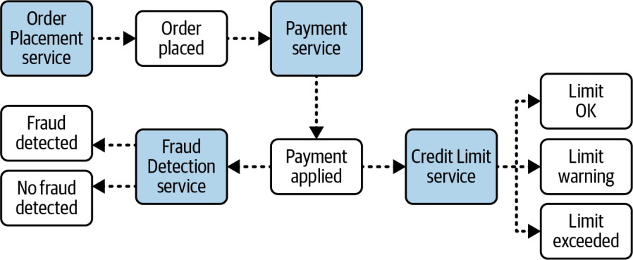
شکل ۱۵-۴. رویدادهای مشتق در پاسخ به رویداد آغازگر تولید میشوند
توجه کنید که همین یک کنش چه تعداد رویداد مشتق تولید میکند. پردازندهٔ رویداد Fraud Detection دو رویداد مشتقِ ممکن را برمیانگیزد: یکی اگر پردازنده تقلبی تشخیص دهد و دیگری اگر تقلبی تشخیص داده نشود. هر دوی این رویدادهای مشتق ضروریاند، زیرا پردازندههای رویدادِ گوناگون ممکن است بسته به نتیجهٔ تشخیص تقلب (fraud detection) کنشهای بیشتری انجام دهند.
اکنون به رویدادهای مشتقِ پردازندهٔ رویداد Credit Limit نگاه کنید. نخست، رویداد مشتقِ limit okay به بقیهٔ سیستم نشان میدهد که این خرید هیچ ریسکی ندارد و مشتری اعتبار کافی در اختیار دارد. در واقع، این رویدادِ مشخص میتواند مقدار اعتبار باقیماندهٔ مشتری را نیز در محمولهٔ رویداد (event payload) خود ذخیره کند؛ اطلاعاتی که ممکن است برای پردازندههای رویدادِ پاییندستی (downstream) جالب باشد. دوم، رویداد مشتقِ limit warning، که هشدار میدهد موجودی کارت به سقف اعتبار نزدیک شده است، ممکن است برای پردازندههای رویدادِ پاییندستیِ دیگری جالب باشد؛ برای نمونه، پردازندهٔ رویداد Notification که میتواند به مشتری اطلاع دهد به سقف اعتبارش نزدیک شده است. سرانجام، رویداد مشتقِ بحرانیِ limit exceeded برای چندین پردازندهٔ رویداد جالب است، از جمله Notification، Decline Purchase و شاید یک پردازندهٔ رویدادِ بازاریابیمحورِ Extend Credit Limit که سقف اعتبار مشتری را بهطور خودکار افزایش میدهد تا خرید ممکن شود.
این مثال نشان میدهد که یک پردازندهٔ رویداد میتواند بیش از یک رویداد مشتق را برانگیزد. با این حال، مراقب باشید در دام ضدالگوی دستهٔ پشهها (Swarm of Gnats antipattern) نیفتید؛ ضدالگویی که در آن یک واحد پردازشی رویدادهای ریزدانهٔ بیش از اندازهای میفرستد (بخش «ضدالگوی دستهٔ پشهها» در صفحهٔ ۲۴۶ را ببینید).
برانگیختن رویدادهای گسترشپذیر
در EDA، معمولاً رویهٔ خوبی است که هر پردازندهٔ رویداد کاری را که انجام داده است به بقیهٔ سیستم اعلام کند، فارغ از اینکه پردازندهٔ رویدادِ دیگری به آن کنش اهمیت میدهد یا نه.
هنگامی که هیچ پردازندهٔ رویدادی به رویداد اهمیت نمیدهد یا به آن پاسخ نمیدهد، آن را رویداد مشتقِ گسترشپذیر (extensible derived event) مینامیم، زیرا با این حال از گسترشپذیریِ معماری پشتیبانی میکند و یک «قلاب» (hook) درونی فراهم میآورد، برای وقتی که پردازش آن رویداد به کارکرد افزودهای نیاز پیدا کند. برای نمونه، فرض کنید در بخشی از یک فرایند رویدادِ پیچیده (چنانکه در شکل ۱۵-۵ نشان داده شده است)، پردازندهٔ رویداد Notification ایمیلی تولید میکند و برای مشتری میفرستد تا او را از یک کنشِ مشخص آگاه کند. سپس از راه یک رویداد مشتقِ تازه (email sent) به بقیهٔ سیستم اعلام میکند که ایمیل را فرستاده است. از آنجا که در حال حاضر هیچ پردازندهٔ رویدادِ دیگری به آن رویداد گوش نمیدهد یا پاسخ نمیدهد، پیام بهسادگی ناپدید میشود (یا در مورد جریانسازی رویداد (event streaming) نادیده گرفته میشود). شاید این کار هدردادنِ منابع به نظر برسد، اما چنین نیست. فرض کنید کسبوکار تصمیم بگیرد همهٔ ایمیلهایی را که برای مشتریان فرستاده شدهاند تحلیل کند. تیم میتواند با کمترین تلاش و بیهیچ تغییری در پردازندههای رویدادِ دیگر، یک پردازندهٔ رویدادِ تازهٔ Email Analyzer به کل سیستم بیفزاید، زیرا اطلاعات ایمیل از پیش از راه رویداد مشتقِ email sent در دسترس است.
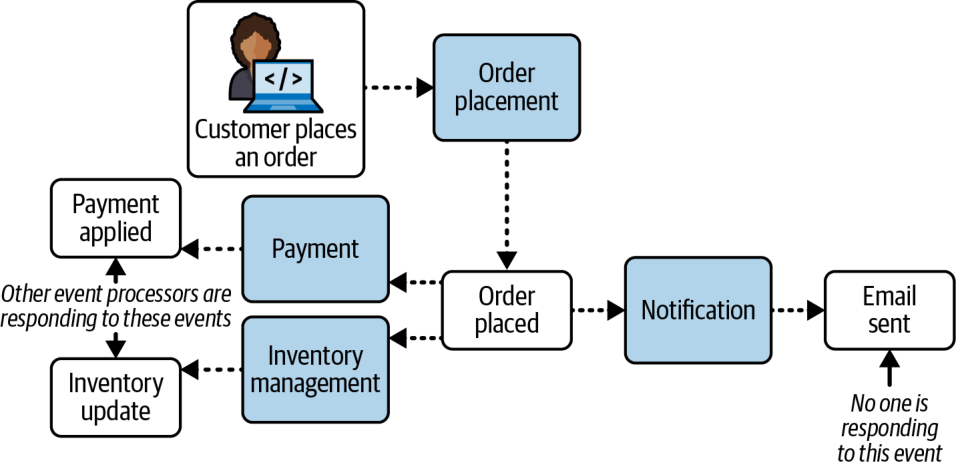
شکل ۱۵-۵. رویدادِ Notification فرستاده میشود، اما نادیده گرفته میشود و استفادهای از آن نمیشود
قابلیتهای ناهمگام
سبک معماری رویدادمحور ویژگی یگانهای دارد: هم برای پردازش بفرستوفراموشکن (که پاسخی لازم ندارد) و هم برای پردازش درخواست/پاسخ (وقتی پاسخی از مصرفکنندهٔ رویداد (event consumer) لازم است؛ بخش «پردازش درخواست-پاسخ» در صفحهٔ ۲۵۶ را ببینید) عمدتاً بر ارتباط ناهمگام تکیه میکند. ارتباط ناهمگام میتواند فنی قدرتمند برای افزایش پاسخگوییِ کلیِ سیستم باشد.
در شکل ۱۵-۶، کاربری در حال ثبت نقدی دربارهٔ یک محصول در یک وبسایت است. سرویس نظر (comment service) در این مثال ۳٬۰۰۰ میلیثانیه زمان میبرد تا آن نظر را اعتبارسنجی و منتشر کند. نظر باید از چندین موتور تجزیه (parsing engines) بگذرد: بررسی واژههای ناپذیرفتنی، بررسی اینکه نظر حاوی متن توهینآمیز (مانند «کندذهن» یا «ناتوان از درست فکرکردن») نباشد، و سرانجام بررسی بافتار برای اطمینان از اینکه نظر واقعاً دربارهٔ محصول است (و مثلاً صرفاً یک سخنرانی سیاسیِ پرخاشگرانه نیست).
مسیر بالایی در شکل ۱۵-۶ نظر را با یک فراخوانی RESTful همگام منتشر میکند. یعنی ۵۰ میلیثانیه تأخیر شبکه (network latency) تا سرویس نظر را دریافت کند، ۳٬۰۰۰ میلیثانیه برای اعتبارسنجی و انتشار نظر، و ۵۰ میلیثانیه تأخیر برای اینکه به کاربر گفته شود نظرش منتشر شده است. بنابراین کل زمان انتشار نظر از دید کاربر ۳٬۱۰۰ میلیثانیه است. اکنون به مسیر پایینی نگاه کنید که از پیامرسانی ناهمگام استفاده میکند. در این مسیر، کل زمان انتشار از دید کاربر تنها ۲۵ میلیثانیه است، در برابر ۳٬۱۰۰ میلیثانیه. سیستم همچنان ۲۵ میلیثانیه برای دریافت نظر و ۳٬۰۰۰ میلیثانیه برای انتشار آن زمان صرف میکند که روی هم ۳٬۰۲۵ میلیثانیه میشود؛ اما از دید کاربر نهایی، تنها ۲۵ میلیثانیه میگذرد تا سیستم پاسخ دهد که نظر را پذیرفته است (هرچند هنوز واقعاً منتشر نشده است).
شکل ۱۵-۶. ارتباط همگام در برابر ارتباط ناهمگام
تفاوت زمان پاسخ میان ۳٬۱۰۰ و ۲۵ میلیثانیه خیرهکننده است. اما یک نکتهٔ احتیاطی وجود دارد: در مسیر همگامِ بالایی، کاربر نهایی تضمین میگیرد که نظرش منتشر شده است. اما در مسیر ناهمگامِ پایینی، تنها دریافتِ نظر تأیید میشود، با این وعده که سرانجام در آینده منتشر خواهد شد. اگر نظر کاربر حاوی ناسزا باشد و سیستم آن را رد کند، چه پیش میآید؟ هیچ راهی برای آگاهکردنِ کاربر نهایی وجود ندارد؛ یا شاید وجود دارد؟ اگر کاربر برای ثبت نظر ناچار باشد در وبسایت نامنویسی کند، سیستم میتواند پیامی برایش بفرستد که از مشکلِ نظر خبر دهد و راه اصلاحش را پیشنهاد کند.
این مثال تفاوت میان پاسخگویی (زمانی که طول میکشد تا اطلاعات به کاربر بازگردد) و کارایی (زمانی که طول میکشد تا نظر در پایگاهداده درج شود) را نشان میدهد. وقتی کاربر به هیچ اطلاعاتی (جز یک تأیید دریافت یا پیام سپاس) نیاز ندارد، چرا باید منتظرش گذاشت؟ پاسخگویی یعنی آگاهکردنِ کاربر از اینکه کنش پذیرفته شده است و بهزودی پردازش خواهد شد، در حالی که کارایی به سریعترکردنِ فرایندِ سرتاسری (end-to-end) مربوط است. در مسیر ناهمگامِ پایینی، معمار هیچ کاری برای بهینهسازیِ شیوهٔ پردازش نظر در سرویس نظر انجام نداد (این یعنی پرداختن به پاسخگویی). اگر معمار وقت میگذاشت تا سرویس نظر را بهینه کند، مثلاً با اجرای موازیِ همهٔ موتورهای تجزیهٔ متن و دستور زبان و بهرهگیری از کشگذاری و فنون مشابه، اما همچنان از ارتباط همگام استفاده میکرد، در آن صورت به کارایی کلی میپرداخت.
این یک مثال ساده بود. مثال پیچیدهتر چه؟ این بار، معاملهٔ آنلاینِ سهام را در نظر بگیرید که در آن کاربری بهصورت ناهمگام مقداری سهام میخرد. اگر هیچ راهی برای آگاهکردنِ کاربر از یک خطا نباشد چه؟
هرچند ارتباط ناهمگام پاسخگویی را بهطور چشمگیری بهبود میدهد، مدیریت خطا مسئلهٔ بزرگی است. دشواریِ رسیدگی به شرایط خطا بر پیچیدگیِ این سبک معماری میافزاید. بخش «مدیریت خطا» در صفحهٔ ۲۴۹ الگویی از معماری واکنشگرا (reactive architecture) را برای رویارویی با چالشهای مدیریت خطا شرح میدهد: الگوی رویداد گردشکار (Workflow Event pattern).
ارتباط ناهمگام افزون بر پاسخگویی، سطح خوبی از جداسازیِ پویا (dynamic decoupling) نیز فراهم میکند و از یک ضدالگو پرهیز میکند: درهمتنیدگی کوانتومیِ پویا (Dynamic Quantum Entanglement)، که هنگامی رخ میدهد که دو کوانتوم معماری از راه ارتباط همگام با هم ارتباط برقرار کنند. (احتمالاً از فصل ۷ به یاد دارید که کوانتوم معماری بخشی از سیستم است که میتوان آن را مستقل از بقیهٔ سیستم مستقر کرد و از راه کوپلینگ پویای همگام به هم پیوند میخورد، و ویژگیهای معماری در سطح کوانتوم وجود دارند.) از آنجا که این دو کوانتوم معماری اکنون به یکدیگر وابستهاند، در اصل درهمتنیده میشوند. این وابستگی آنها را به یک کوانتوم معماریِ واحد بدل میکند. ارتباط ناهمگام میتواند به گشودنِ گرهِ کوانتومهای معماری کمک کند، زیرا آن وابستگیِ پویا را از میان برمیدارد.
برای روشنشدنِ این نکتهٔ مهم، دو سیستم شکل ۱۵-۷ را در نظر بگیرید. در این مثال، سیستم Portfolio Management یک سفارش معامله برای خرید مقداری سهام ایجاد میکند. این سیستم سفارش معامله را بهصورت همگام به سیستم Trade Order میفرستد که بررسیهای انطباق (compliance checks) را انجام میدهد و سفارش معامله را ایجاد میکند. از آنجا که ارتباط میان این دو سیستم همگام است، سیستم Portfolio Management ناگزیر باید مسدود بماند و منتظر شمارهٔ تأیید معامله از سیستم Trade Order باشد. این دو سیستم درهمتنیده شدهاند و اکنون یک کوانتوم معماریِ واحد را تشکیل میدهند.
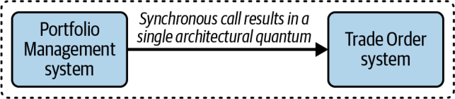
شکل ۱۵-۷. این سیستمها به دلیل کوپلینگ پویای همگام، یک کوانتوم معماریِ واحد را تشکیل میدهند
اهمیت این درهمتنیدگی در این است که ویژگیهای معماری اکنون میان این دو سیستم مشترکاند. اگر سیستم Trade Order از دسترس خارج شود یا پاسخ ندهد، سیستم Portfolio Management نمیتواند سفارش معامله را ثبت کند. این امر پاسخگویی را نیز کاهش میدهد: اگر سیستم Trade Order کند باشد، سیستم Portfolio Management نیز کند خواهد بود. مقیاسپذیری نیز آسیب میبیند، زیرا اگر سیستم Portfolio Management نیاز به مقیاسپذیری داشته باشد، سیستم Trade Order نیز باید مقیاسپذیر شود. اگر چنین نشود یا نتواند بشود، سیستم Portfolio Management نمیتواند به اندازهٔ لازم مقیاسپذیر شود.
معمار میتواند با جایگزینکردنِ فراخوانی همگام با یک فراخوانی ناهمگام میان دو سیستم، گرهِ این کوانتومهای معماری را بگشاید؛ چنانکه در شکل ۱۵-۸ نشان داده شده است.
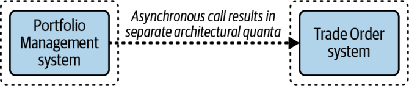
شکل ۱۵-۸. این سیستمها به دلیل کوپلینگ پویای ناهمگامشان، کوانتومهای معماریِ جداگانهای را تشکیل میدهند
با استفاده از ارتباط ناهمگام، سیستم Portfolio Management میتواند سفارش معامله را از راه یک صف یا سازوکار ناهمگامِ دیگری بفرستد، پس لازم نیست منتظر بماند تا سیستم Trade Order سفارش معامله را ایجاد کند. هنگامی که سیستم Trade Order بررسیهای انطباق را انجام داد و سفارش معامله را ایجاد کرد، میتواند شمارهٔ تأیید را از راه یک کانال ناهمگامِ جداگانه برای سیستم Portfolio Management بفرستد. حذف این وابستگی از کوپلینگ پویای دو سیستم به آنها امکان میدهد دو کوانتوم معماریِ جداگانه تشکیل دهند. اگر سیستم Trade Order از دسترس خارج شود یا پاسخ ندهد، سیستم Portfolio Management همچنان میتواند سفارشهای معامله صادر کند، با این اطمینان که در زمانی این سفارشها ایجاد خواهند شد و شمارههای تأیید بازگردانده میشوند.
قابلیتهای پخش
یکی دیگر از ویژگیهای یگانهٔ EDA، تواناییاش در پخش رویدادهاست، بیآنکه بداند کدام واحدهای پردازشیِ دیگر (اگر اصلاً واحدی باشد) آن رویدادها را دریافت میکنند یا در پاسخ چه پردازشی انجام میدهند. چنانکه شکل ۱۵-۹ نشان میدهد، این ویژگی پردازندههای رویداد را بهصورت پویا از یکدیگر جدا میکند.
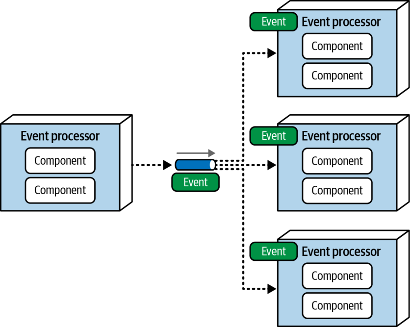
شکل ۱۵-۹. پخش رویدادها برای پردازندههای رویدادِ دیگر
قابلیتهای پخش بخشی اساسی از بسیاری الگوهاست، از جمله سازگاری نهایی و پردازش رویداد پیچیده (complex event processing یا CEP). برای نمونه، قیمت ابزارهای مالیای که در بازار سهام معامله میشوند پیوسته تغییر میکند. هر بار که قیمت لحظهایِ تازهای (ticker price، یعنی قیمت فعلیِ یک سهم مشخص) منتشر میشود، ممکن است پردازندههای رویدادِ بسیاری به قیمت تازه پاسخ دهند (مانند تحلیل معاملات، یا خرید یا فروش سهام). اما پردازندهٔ رویدادی که آخرین قیمت را منتشر میکند، تنها آن را پخش میکند و هیچ نمیداند این اطلاعات چگونه به کار خواهد رفت. این را جداسازی معنایی (semantic decoupling) مینامند، از این نظر که یک پردازندهٔ رویداد هیچ دانشی دربارهٔ کنشهای پردازندههای رویدادِ دیگر ندارد (و به آنها وابسته نیست).
محمولهٔ رویداد
اطلاعاتی که یک رویداد در بر دارد، محمولهٔ آن نامیده میشود. محمولهها میتوانند تفاوت چشمگیری با هم داشته باشند: محمولهٔ رویداد ممکن است یک جفت کلید-مقدار (key-value pair) ساده باشد، یا همهٔ اطلاعاتی که برای پردازش پاییندستی لازم است. دو نوع پایه، محمولهٔ رویدادِ مبتنی بر داده و محمولهٔ رویدادِ مبتنی بر کلید هستند. معماران باید با تحلیل دقیق مصالحهها تعیین کنند کدامیک از این گزینهها برای هر نوع رویدادی که در سیستم برانگیخته میشود مناسب است. در این بخش، این دو نوع محموله و مصالحههای متناظرشان را شرح میدهیم.
محمولههای رویدادِ مبتنی بر داده
محمولهٔ رویدادِ مبتنی بر داده (data-based event payload) محمولهای است که همهٔ اطلاعات لازم برای پردازش را میفرستد. در مثالی که در شکل ۱۵-۱۰ نشان داده شده، مشتری سفارشی ثبت میکند. نخست، پردازندهٔ رویداد Order Placement کل سفارش را در پایگاهداده (سیستم مرجع) درج میکند. سپس رویدادی به نام order_placed را پخش میکند که همهٔ جزئیات سفارش را در بر دارد (در این مثال، ۴۵ صفت که روی هم ۵۰۰ کیلوبایت حافظه میگیرند). پردازندهٔ رویداد Payment با بیرونکشیدنِ اطلاعات از محمولهٔ رویداد، یعنی شناسهٔ سفارش، اطلاعات مشتری و هزینهٔ کل سفارش، و بهکاربردنِ آنها برای اعمال پرداخت، به این رویداد پاسخ میدهد. همزمان، پردازندهٔ رویداد Inventory Management از شناسهٔ کالا و تعداد کالا در محمولهٔ رویداد استفاده میکند تا موجودیِ فعلیِ کالای خریداریشده را تنظیم کند.
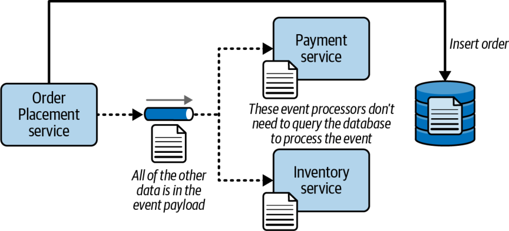
شکل ۱۵-۱۰. محمولههای رویدادِ مبتنی بر داده همهٔ دادههای لازم برای پردازش را در بر دارند
پردازندههای رویداد Payment و Inventory Management برای به دست آوردنِ اطلاعات سفارش ناچار نبودند از پایگاهداده پرسوجو کنند، زیرا دادهها از پیش در محمولهٔ رویداد بودند. این یکی از بزرگترین مزیتهای استفاده از محمولههای رویدادِ مبتنی بر داده است. هرچه یک پردازندهٔ رویداد کمتر از پایگاهداده پرسوجو کند، کارایی، پاسخگویی و مقیاسپذیریاش بهتر خواهد بود. افزون بر این، با توجه به ماهیتِ جدا از هم و بهشدت پویای EDA، پردازندهٔ رویداد Order Placement ممکن است نداند کدام پردازندههای رویدادِ دیگر به رویداد پاسخ میدهند یا برای پردازش به چه دادههایی نیاز دارند. فرستادنِ همهٔ اطلاعات در محمولهٔ رویداد تضمین میکند که هر پردازندهٔ رویدادِ پاسخدهنده اطلاعات لازم برای انجام پردازشش را در اختیار دارد. ممکن است پردازندههای رویداد حتی به پایگاهدادهای که اطلاعات سفارش را در بر دارد دسترسی نداشته باشند، بهویژه در توپولوژیهای دادهای با زمینههای محدودِ سختگیرانه، یعنی توپولوژیِ مبتنی بر حوزه یا پایگاهداده به ازای هر سرویس (database-per-service) (بخش «توپولوژیهای داده» در صفحهٔ ۲۶۸ را ببینید).
هرچند این مزیتها راههایی برای ساختن سیستمهایی پاسخگوتر، مقیاسپذیرتر و منعطفتر نشان میدهند، محمولههای مبتنی بر داده چند عیب نیز دارند. نخستین عیب این است که وقتی چند سیستم مرجع دارید، حفظ سازگاری داده (data consistency) و یکپارچگی داده دشوارتر است. از آنجا که همهٔ اطلاعات سفارش هم در پایگاهداده و هم در رویدادهایی که در سیستم برانگیخته میشوند وجود دارد، اطلاعات سفارش بهآسانی ممکن است ناهمگام شوند؛ بهویژه اگر سفارش در حین پردازش بهروز شود.
برای نمونه، فرض کنید مشتریای صد قلم کالا سفارش میدهد، در حالی که قصد داشته فقط یکی سفارش دهد، و بلافاصله پس از ثبت سفارش متوجه اشتباهش میشود. یا شاید مشتری درست پس از سفارشدادن درمییابد که نشانی ارسالِ نادرستی به کار برده است (این اتفاق بارها برای نویسندگان این کتاب افتاده است). در هر یک از این موقعیتها، مشتری بیدرنگ سفارش را با اطلاعات درست بهروز میکند. پایگاهداده، که تنها سیستم مرجع است، مقادیر اصلاحشده را در بر دارد، اما برخی رویدادهایی که مقادیر قدیمیتر را در بر دارند ممکن است بیدرنگ پردازش نشوند. یعنی هر یک از مقادیر قدیمی و نادرستی که هنوز در حال پردازش است، بهجای مقادیر تازه و درست به کار خواهد رفت. این سناریو از این هم پیچیدهتر میشود: کنترل زمانبندیِ رویدادها در EDA بسیار دشوار است، پس ممکن است مقادیر تازهتر پیش از مقادیر قدیمیتر پردازش شوند. یعنی اگر پردازندههای رویدادِ دیگر از مقادیر قدیمی و نادرست استفاده کنند، این مقادیر ممکن است روی مقادیر تازه و درست بازنویسی شوند.
دومین عیب عمدهٔ محمولهٔ رویدادِ مبتنی بر داده به مدیریت قرارداد (contract management) و نسخهبندی مربوط است. میدانیم که هر سفارش در این سیستم ۴۵ صفت دارد. از آنجا که همهٔ این اطلاعات در محمولهٔ رویداد قرار دارد، رویداد به نوعی قرارداد نیاز دارد؛ یعنی شیوهای برای ساختاردهی به دادههایی که فرستاده میشوند. اکنون معمار با انبوهی از تصمیمها روبهروست: آیا نوع محموله باید یک شیء JSON باشد؟ یک شیء XML؟ آیا قرارداد باید سختگیرانه باشد یا آزاد؟ (قرارداد سختگیرانه (strict contract) قراردادی است که از نوعی طرحواره یا تعریف شیء استفاده میکند، مانند JSON Schema، مشخصهٔ GraphQL یا تعریف کلاس؛ در حالی که قرارداد آزاد (loose contract) ممکن است از جفتهای نام-مقدارِ سادهٔ JSON استفاده کند.) هر یک از این تصمیمها مصالحههای فراوانی به همراه دارد و هر یک کوپلینگ ایستای محکمی میان پردازندههای رویداد پدید میآورد.
و سپس نوبت به نسخهبندی میرسد. در قراردادهای سختگیرانه، معمار یا توسعهدهنده ممکن است از یک نوع MIME اختصاصیِ فروشنده (vendor MIME type) در سرآیندهای رویداد (event headers) استفاده کند تا شمارهٔ نسخه را مشخص کند. این کار به چابکترشدنِ سیستم کمک میکند و سازگاری رو به عقب را فراهم میآورد (تا پردازندههای رویدادِ دیگر از کار نیفتند). اما همهٔ پردازندههای رویداد باید از منطق نسخهبندیِ یکسانی بهره بگیرند و این امر حاکمیت قدرتمندی میطلبد. اگر پردازندهای هنگام پاسخ به محمولهٔ یک قرارداد سختگیرانه، نسخهٔ قرارداد را نادیده بگیرد، تغییر آن طرحواره احتمالاً باعث از کار افتادنِ آن پردازنده خواهد شد. افزون بر این، پیادهسازیِ راهبردهای اطلاعرسانیِ نسخه و منسوخسازی (deprecation) در معماریای بهشدت جدا از هم و ناهمگام مانند EDA بسیار دشوار است. همهٔ اینها محمولههای رویدادِ مبتنی بر داده را تا اندازهای شکننده میکند.
محمولههای رویدادِ مبتنی بر داده ممکن است از کوپلینگ مُهری نیز آسیب ببینند؛ شکلی از کوپلینگ ایستا که در آن چندین ماژول (در این مثال، پردازندههای رویداد) همگی یک ساختمان دادهٔ مشترک را به اشتراک میگذارند، اما تنها از بخشهایی از آن استفاده میکنند (و در بسیاری موارد، هر یک از بخشهای متفاوتی). در چنین وضعی، تغییر ساختمان دادهٔ مشترک ممکن است تغییر پردازندههای رویدادِ دیگر را لازم کند، حتی پردازندههایی که به آن داده اهمیتی نمیدهند.
شکل ۱۵-۱۱ شیوهٔ عملکرد کوپلینگ مُهری و اثر منفیاش بر معماری را نشان میدهد. در این مثال، پردازندهٔ رویداد Order Placement رویداد order_placed را میفرستد که از ۴۵ صفت تشکیل شده است، همهٔ اطلاعات سفارش را در بر دارد و ۵۰۰ کیلوبایت حجم دارد. پردازندهٔ رویداد Inventory به رویداد order_created پاسخ میدهد، اما تنها به دو صفت، یعنی item_id و quantity، نیاز دارد که روی هم تنها ۳۰ بایتاند. در این مثال، تغییر محموله، مثلاً حذف صفتِ یک سطر نشانی، بر پردازندهٔ رویداد Inventory اثر میگذارد، هرچند این پردازنده به آن فیلد اهمیتی نمیدهد.
شکل ۱۵-۱۱. نمونهای از کوپلینگ مُهری که در آن سرویسی دیگر تنها به بخشی از دادههای فرستادهشده نیاز دارد
در این مثال، استفاده از نسخهبندی قرارداد همراه با قراردادهای سختگیرانه به کاهش ریسکِ از کار افتادنِ پردازندهٔ رویداد Inventory کمک میکند، اما سرانجام در زمانی، یعنی وقتی نسخهٔ قرارداد منسوخ شود یا تغییرِ شکنندهٔ قرارداد (breaking contract change) رخ دهد، توسعهدهنده ناچار خواهد بود آن پردازنده را دوباره بیازماید و دوباره مستقر کند.
یکی از مشکلاتِ کوپلینگ مُهری که معمولاً نادیده گرفته میشود، مصرف پهنای باند است. سومین مغالطهٔ محاسبات توزیعشده این است که «پهنای باند نامحدود است». البته که نیست. در واقع، در بیشتر محیطهای مبتنی بر ابر، همین پهنای باند است که هزینهٔ زیادی دارد. به مثالمان در شکل ۱۵-۱۱ بازگردیم: با محمولهٔ مبتنی بر داده، اگر مشتریان در هر ثانیه ۵۰۰ سفارش ثبت کنند، فرستادنِ یک رویداد ۵۰۰ کیلوبایتی به پردازندهٔ رویداد Inventory در هر ثانیه ۲۵۰٬۰۰۰ کیلوبایت پهنای باند مصرف میکند. اما اگر سیستم تنها همان ۳۰ بایت دادهای را بفرستد که واقعاً لازم است، رویداد در هر ثانیه تنها ۱۵ کیلوبایت پهنای باند مصرف خواهد کرد. این تفاوتی خیرهکننده است که هنگام استفاده از محمولههای رویدادِ مبتنی بر داده ارزش بررسی دارد.
یکی از دلایلی که معماران گاهی کوپلینگ مُهری را محدود میکنند، بهرهگیری از قراردادهای مصرفکنندهمحور است که در آنها هر مصرفکنندهٔ پیام قرارداد خاص خود را دارد که تنها دادههای لازم برای پردازشِ آن مصرفکننده را در بر میگیرد. اما به دلیل قابلیتهای پخشِ EDA، و از آنجا که سیستم همیشه نمیتواند بداند کدام پردازندههای رویداد به یک رویداد پاسخ خواهند داد، بهرهگیری از قراردادهای مصرفکنندهمحور برای رویدادها در معماری رویدادمحور دشوار است. به همین دلیل (و برای رویارویی با دیگر عیبهای محمولههای رویدادِ مبتنی بر داده)، بسیاری از معماران به محمولههای رویدادِ مبتنی بر کلید روی میآورند.
محمولهٔ رویدادِ مبتنی بر کلید
محمولهٔ رویدادِ مبتنی بر کلید (key-based event payload) محمولهای است که تنها کلیدی را در بر دارد که بافتارِ رویداد را مشخص میکند (مانند شناسهٔ سفارش یا شناسهٔ مشتری). با محمولههای رویدادِ مبتنی بر کلید، پردازندههای رویدادی که به رویداد پاسخ میدهند باید از پایگاهداده پرسوجو کنند تا اطلاعات لازم برای پردازش رویداد را بازیابی کنند.
هنگامی که مشتری سفارشی ثبت میکند، پردازندهٔ رویداد Order Placement سفارش را در پایگاهداده درج میکند و رویدادی مبتنی بر کلید به نام order_placed را برمیانگیزد. این رویداد تنها یک مقدار کلیدی را در قالب JSON ساده در بر دارد که شناسهٔ سفارش است:
{ "order_id": "123" }
یکی از عیبهای اصلی محمولههای رویدادِ مبتنی بر کلید این است که هر پردازندهٔ رویدادی که به رویداد پاسخ میدهد، باید از پایگاهداده پرسوجو کند تا اطلاعات لازم برای پردازش سفارش را به دست آورد. برای نمونه، وقتی پردازندهٔ رویداد Payment به رویداد پاسخ میدهد، باید اطلاعات سفارشی را که برای پردازش پرداخت لازم دارد از پایگاهداده پرسوجو کند. پردازندهٔ رویداد Inventory نیز همزمان به رویداد پاسخ میدهد، پس آن هم باید از پایگاهداده پرسوجو کند تا شناسه و تعداد کالا را بازیابی کند. این امر میتواند از پاسخگویی، کارایی و مقیاسپذیری بکاهد و پایگاهداده را زیر بار ببرد، بهویژه در معماریای بهشدت موازی و ناهمگام مانند معماری رویدادمحور. (برای راههای کاستن از این ریسک، بخش «توپولوژیهای داده» در صفحهٔ ۲۶۸ را ببینید.) محمولههای رویدادِ مبتنی بر کلید همچنین وقتی دادههای لازم بهآسانی در دسترس نباشند (مثلاً اگر درون زمینهٔ محدودِ پردازندهٔ رویدادِ دیگری قرار داشته باشند) چالشبرانگیز میشوند. شکل ۱۵-۱۲ این فن را نشان میدهد.
شکل ۱۵-۱۲. در محمولههای رویدادِ مبتنی بر کلید، تنها کلیدِ بافتار در رویداد قرار دارد
با این حال، استفاده از محمولههای رویدادِ مبتنی بر کلید مزیتهای فراوانی دارد که برخی از آنها ممکن است بر مسائل کارایی و مقیاسپذیری بچربند. نخستین مزیت اصلی، سازگاری و یکپارچگیِ کلیِ بهتر دادههاست، به لطف داشتنِ یک سیستم مرجعِ واحد. از آنجا که دادههای مربوط به رویداد تنها در یک جا (پایگاهداده) قرار دارند، محمولههای رویدادِ مبتنی بر کلید میتوانند تغییرات داده در حین پردازش رویداد را بسیار آسانتر از محمولههای رویدادِ مبتنی بر داده مدیریت کنند.
دومین مزیت اصلی این است که چون قرارداد در محمولههای رویدادِ مبتنی بر کلید بسیار ساده است و بهندرت تغییر میکند، معماران معمولاً آن را با JSON یا XML آزاد و بدون طرحواره (schema-less) پیادهسازی میکنند. از این رو، محمولههای رویدادِ مبتنی بر کلید با مسائلی که محمولههای رویدادِ مبتنی بر داده معمولاً در مدیریت تغییر قرارداد، نسخهبندی، و راهبردهای اطلاعرسانی و منسوخسازی دارند، روبهرو نیستند.
مزیت دیگر محمولههای رویدادِ مبتنی بر کلید این است که مسائل کوپلینگ مُهری و پهنای باندِ محمولههای رویدادِ مبتنی بر داده را ندارند. از آنجا که هیچ دادهٔ مبهمی (opaque data) به رویداد پیوسته نیست، قراردادها ساده و کوچکاند و کمترین پهنای باند را مصرف میکنند. بنابراین، از دیدگاه شبکه و کارگزار پیام (message broker)، این محمولهها معمولاً سریعتر از محمولههای رویدادِ مبتنی بر داده عمل میکنند.
خلاصهٔ مصالحهها
انتخاب میان محمولهٔ رویدادِ مبتنی بر داده و محمولهٔ مبتنی بر کلید، تحلیل دقیق مصالحهها را میطلبد. به یاد داشته باشید که این انتخاب از نوع «همه یا هیچ» نیست: هر نوع رویداد میتواند نوع محمولهٔ متفاوتی به کار ببرد. جدول ۱۵-۱ مصالحههای مربوط به محمولههای رویدادِ مبتنی بر داده و مبتنی بر کلید را خلاصه میکند.
جدول ۱۵-۱. محمولههای رویدادِ مبتنی بر داده در برابر مبتنی بر کلید
معیار
محمولههای مبتنی بر داده
محمولههای مبتنی بر کلید
کارایی و مقیاسپذیری
خوب
بد
مدیریت قرارداد
بد
خوب
کوپلینگ مُهری
بد
خوب
مصرف پهنای باند
بد
خوب
دسترسیِ محدود به پایگاهداده
خوب
بد
شکنندگیِ کلیِ سیستم
بد
خوب
توجه کنید که مصالحهٔ کلی میان این دو گزینه در نهایت به مقیاسپذیری و کارایی در برابر مدیریت قرارداد و مصرف پهنای باند خلاصه میشود. برای هر رویدادِ مشخص بپرسید کدامیک مهمتر است. برخی پردازشهای رویداد به سطوح بسیار بالایی از مقیاس و کارایی نیاز دارند که در این صورت محمولهٔ رویدادِ مبتنی بر داده گزینهٔ بهتری است؛ دادههای برخی پردازشهای رویداد نیز پیوسته تغییر میکنند که در این صورت محمولهٔ رویدادِ مبتنی بر کلید ممکن است مناسبتر باشد.
مانند بیشتر مسائل در معماری نرمافزار، انتخابهای معماران روی یک طیف قرار دارند، نه یک دوگانهٔ ساده. به همین دلیل مهم است که مراقب باشیم چیزی را برنینگیزیم که رویدادهای کمخون نامیده میشوند.
رویدادهای کمخون
رویداد کمخون (anemic event) رویدادی مشتق است که محمولهاش اطلاعات کافی برای کمک به پردازندهٔ رویداد در تصمیمگیری ندارد و بافتار لازم برای پردازشهای پاییندستیِ بعدی را نیز فاقد است.
شکل ۱۵-۱۳ یک رویداد مشتقِ کمخون را نشان میدهد. در این مثال، مشتری برخی اطلاعات نمایهٔ کاربریاش را بهروز کرده است. پس از بهروزرسانیِ این اطلاعات در پایگاهداده، پردازندهٔ رویداد Customer Profile رویداد profile_updated را با یک محمولهٔ رویدادِ مبتنی بر کلید برمیانگیزد که تنها شناسهٔ مشتری را بهعنوان دادهٔ کلیدی منتقل میکند.
سه سرویسی که به این رویداد پاسخ میدهند، تنها شناسهٔ مشتری و این بافتار را دریافت میکنند که نمایهٔ مشتری تغییر کرده است. سرویس نخست (Service 1) هیچ نمیداند کدام داده در نمایه تغییر کرده است: نام، نشانی، یا اطلاعات حیاتیِ دیگری؟ متأسفانه پرسوجو از پایگاهداده نمیتواند به این پرسش پاسخ دهد، پس Service 1 هیچ نمیداند چگونه پاسخ دهد یا چه کنشی انجام دهد. Service 2 به رویداد profile_updated پاسخ میدهد، اما تنها با تکیه بر کلید نمیداند که آیا باید پردازش افزودهای انجام دهد یا نه. سرانجام، Service 3 به همان رویداد پاسخ میدهد، اما هیچ نمیداند مقادیر پیشین چه بودهاند و از این رو نمیتواند پردازشش را انجام دهد. هر سه پردازندهٔ رویداد باید به نحوی به بهروزرسانیِ نمایه از سوی مشتری پاسخ دهند، اما به دلیل کمبود اطلاعات نمیتوانند. اینها رویدادهای کمخوناند: رویدادهایی که اطلاعات افزودهای برای پردازش بیشترِ رویداد در بر ندارند.
شکل ۱۵-۱۳. رویداد کمخون بافتار کافی برای پردازش رویداد ندارد
برای پرهیز از رویدادهای کمخونی مانند این، اطلاعات بهروزشدهٔ مشتری و نیز مقادیر پیشین را در رویداد بگنجانید، زیرا بیشتر پایگاهدادهها معمولاً این اطلاعات را بازتاب نمیدهند.
این نمونهای از طیفِ دانهبندیِ محمولهٔ رویداد است. در منتهاالیهِ چپ این طیف، محمولههای رویدادِ مبتنی بر کلید قرار دارند که در آنها تنها کلید درون رویداد جای دارد. هرچند این روش هنگام ایجاد یا حذف سفارش سودمند است، وقتی مشتری سفارشی را بهروز میکند بهخوبی کار نمیکند. در منتهاالیهِ راست طیف، محمولهٔ رویدادِ مبتنی بر داده قرار دارد که همهٔ دادهها را، چه لازم باشند چه نباشند، در بر میگیرد. اینجاست که کوپلینگ مُهری چهرهٔ زشتش را نشان میدهد. سناریوی بهروزرسانیِ نمایهٔ مشتری جایی میان این دو سرِ طیف قرار میگیرد، زیرا سطح مناسبی از اطلاعات را فراهم میکند و بدین ترتیب از مشکلِ رویداد مشتقِ کمخون پرهیز میکند.
ضدالگوی دستهٔ پشهها
ضدالگویی که دستهٔ پشهها نام دارد، با رویدادهای کمخون خویشاوند است. احتمالاً پشههای ریز را میشناسید: حشراتِ پرندهٔ بسیار کوچک و آزاردهندهای که دور سرتان وزوز میکنند و چنان کلافهتان میکنند که در یک روز زیبا و آفتابی به خانه برمیگردید. در حالی که رویدادهای کمخون به دانهبندیِ محمولهٔ رویداد مربوطاند، ضدالگوی دستهٔ پشهها به دانهبندیِ خودِ رویدادهای برانگیخته و به تعداد رویدادهای مشتقی مربوط است که یک پردازندهٔ رویداد برمیانگیزد. اگر معمار از یک پردازندهٔ رویدادِ واحد رویدادهای مشتقِ بیش از اندازهای برانگیزد، در خطر گرفتار شدن در ضدالگوی دستهٔ پشهها قرار میگیرد.
مثال پرداخت با کارت اعتباری را در شکل ۱۵-۱۴ در نظر بگیرید که در آن مشتری سفارشی ثبت میکند و برای پرداختِ آن، مبلغ از کارت اعتباریاش کسر میشود. هنگامی که مبلغ از کارت کسر میشود، پردازندهٔ رویداد Payment رویداد payment applied را برمیانگیزد و (خوشبختانه) پردازندهٔ رویداد Fraud Detection به آن گوش میدهد. این پردازندهٔ رویداد هر تراکنش را تحلیل میکند تا مشخص کند مشروع است یا متقلبانه. نتیجه هرچه باشد، پردازندهٔ رویداد Fraud Detection رویداد مشتقِ fraud_checked را برمیانگیزد که نتیجهٔ بررسی تقلب را در محمولهٔ خود دارد.
شکل ۱۵-۱۴. نمونهای از رویدادی بیش از حد درشتدانه
سه پردازندهٔ رویداد به نتیجهٔ بررسی تقلبِ کارت اعتباری علاقهمندند:
اگر تقلب تشخیص داده شود، پردازندهٔ رویداد Credit Card Locking کارت اعتباری مشتری را قفل میکند تا از کسرهای بعدی جلوگیری شود.
پردازندهٔ رویداد Customer Notify مشتری را از تقلب احتمالی آگاه میکند.
اگر تقلب تشخیص داده نشود، پردازندهٔ رویداد Purchase Profile الگوریتمهایش را بهروز میکند.
متأسفانه، وقتی یک رویداد مشتقِ واحدِ fraud_checked برانگیخته میشود، همهٔ این پردازندههای رویداد باید به رویداد پاسخ دهند، نتیجه را در محموله بررسی کنند و تصمیم بگیرند که آیا کنشی انجام دهند یا نه. از آنجا که این رویداد مشتق بیش از حد درشتدانه است، همهٔ پردازندههای رویداد ناچارند پردازش افزودهای انجام دهند: تحلیلِ محمولهٔ همان رویداد مشتقِ واحد برای تصمیمگیری دربارهٔ انجامدادن یا ندادنِ کنش. اگر تقلبی تشخیص داده نشده باشد، این کار هدردادنِ پهنای باند و توان پردازشی است، زیرا تنها پردازندهٔ رویداد Purchase Profile لازم بود کنشی انجام دهد.
رویکرد بسیار کاراتر این است که دو رویداد مشتقِ جداگانه (fraud_detected و no_fraud_detected) برانگیخته شود؛ چنانکه در شکل ۱۵-۱۵ نشان داده شده است. در اینجا، رویدادهای مشتقی که پردازندهٔ رویداد Fraud Detection برمیانگیزد، بافتار را بیرون از محمولهٔ رویداد فراهم میکنند و به هر پردازندهٔ رویداد امکان میدهند بیآنکه محمولهٔ درونیِ رویداد را تحلیل کند، تصمیم بگیرد که پاسخ دهد یا نه.
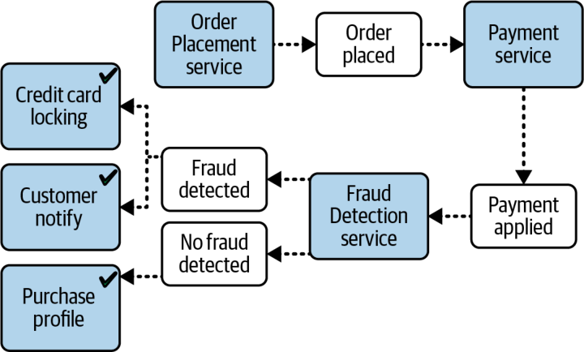
شکل ۱۵-۱۵. برانگیختنِ چند رویداد، پردازش و تصمیمگیریِ کاراتری را ممکن میکند
در این مثال، برانگیختنِ چند رویداد مشتق برای هر نتیجه، جریان رویدادِ بهتر، آشفتگیِ کمتر (less churn) و پردازش کاراتری را ممکن میسازد. اما برانگیختنِ رویدادهای مشتقِ بیش از اندازه به ضدالگوی دستهٔ پشهها میانجامد.
سناریوی شکل ۱۵-۱۶ نشان میدهد این ضدالگو چگونه ممکن است رخ دهد. مشتریای بهتازگی اسبابکشی کرده است و باید نمایهٔ کاربریاش را در وبسایت تغییر دهد تا نشانی صورتحساب کارت اعتباری، نشانی ارسال (جایی که سفارشها به آن فرستاده میشوند) و شمارهٔ تلفنش را، از تلفن ثابت قدیمی به تلفن همراه، بهروز کند. وقتی مشتری دکمهٔ Submit را برای این تغییرات نمایه میزند، پردازندهٔ رویداد Customer Profile درخواست بهروزرسانی را دریافت میکند، پایگاهداده را بهروز میکند و برای هر بهروزرسانی رویدادی جداگانه برمیانگیزد که اطلاعات لازم برای هر پردازش بعدی را در بر دارد.
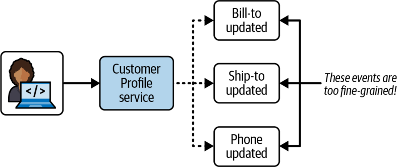
شکل ۱۵-۱۶. برانگیختنِ رویدادهای مشتقِ ریزدانهٔ بیش از اندازه، ضدالگوی دستهٔ پشهها نامیده میشود
مشکلِ برانگیختنِ رویدادهای ریزدانه و جزئیِ بیش از اندازه این است که میتواند سیستم را با رویدادهای مشتقی که همگی به یک چیز مربوطاند، یعنی اینکه مشتری نمایهٔ کاربریاش را بهروز کرده است، اشباع کند و از پا درآورد. این ضدالگو همچنین معمولاً باعث تکثیرِ رویدادهای مشتقِ کوچکِ فراوانی از سوی پردازندههای رویدادِ دیگر میشود و سرانجام فهم جریانهای رویدادِ کلیِ سیستم را برای همه دشوار میکند.
برای پرهیز از این ضدالگو، معمار میتواند هر بهروزرسانیِ جداگانهٔ نمایه را در قالب یک رویداد مشتقِ واحدِ profile_updated برای کل کنش بستهبندی کند که دادههای پیش و پس از تغییرِ همهٔ فیلدهای بهروزشده را در بر دارد. این رویکرد کاراتر در شکل ۱۵-۱۷ نشان داده شده است.
شکل ۱۵-۱۷. ترکیب تغییرات حالتِ جداگانه در یک رویداد مشتقِ واحد، از ضدالگوی دستهٔ پشهها پرهیز میکند
تعیین سطح مناسبِ دانهبندی برای رویدادهای مشتق میتواند بسیار چالشبرانگیز باشد. توصیهٔ ما این است که برای پرهیز از ضدالگوی دستهٔ پشهها و سادهکردنِ جریانهای رویداد، بر نتیجهٔ پردازش یا تغییر حالت (state change) تمرکز کنید.
مدیریت خطا
الگوی رویداد گردشکار در معماری واکنشگرا یکی از راههای رسیدگی به مدیریت خطا (error handling) در یک گردشکارِ ناهمگام است. این الگو هم تابآوری (resiliency) و هم پاسخگویی را در نظر دارد، زیرا به سیستم امکان میدهد خطاهای ناهمگام را بیآنکه بر پاسخگوییاش اثر بگذارد مدیریت کند.
الگوی رویداد گردشکار با استفاده از یک نمایندهٔ گردشکار (workflow delegate) از واگذاری (delegation)، دربرگیری (containment) و ترمیم (repair) بهره میگیرد؛ چنانکه در شکل ۱۵-۱۸ نشان داده شده است. در این الگو، یک پردازندهٔ رویداد دادهها را بهصورت ناهمگام از راه یک کانال پیام (message channel) به مصرفکنندهٔ رویداد میفرستد. اگر مصرفکنندهٔ رویداد در حین پردازش دادهها با خطایی روبهرو شود، بیدرنگ آن خطا را به سرویس Workflow Processor واگذار میکند و به سراغ پیام بعدی در صف رویداد میرود. بدین ترتیب، پیام بعدی بیدرنگ پردازش میشود و پاسخگوییِ کلی ثابت میماند. اگر مصرفکنندهٔ رویداد وقتش را صرف سردرآوردن از خطا میکرد، پیام بعدیِ صف را پردازش نمیکرد و نهتنها پیام بعدی، بلکه همهٔ پیامهای دیگری که در صف پردازش منتظرند به تأخیر میافتادند.
هنگامی که سرویس Workflow Processor خطایی دریافت میکند، میکوشد بفهمد پیام چه اشکالی دارد. شاید خطایی ایستا و قطعی در کار باشد؟ این سرویس میتواند پیام را با برخی الگوریتمهای یادگیری ماشین یا هوش مصنوعی تحلیل کند تا ناهنجاریای (anomaly) در دادهها بیابد. در هر حال، پردازندهٔ گردشکار بهصورت برنامهای (یعنی بدون دخالت انسان) تغییراتی در دادهٔ اصلی ایجاد میکند تا آن را ترمیم کند و سپس آن را به صف مبدأ بازمیفرستد. مصرفکنندهٔ رویداد این پیام بهروزشده را پیامی تازه میبیند و دوباره میکوشد پردازشش کند؛ امید است این بار با موفقیت بیشتر.
البته پردازندهٔ گردشکار همیشه نمیتواند تشخیص دهد پیام چه اشکالی دارد. در این موارد، پیام را به صف دیگری میفرستد که سپس در داشبوردی روی میز کار یک فرد آگاه دریافت میشود. این فرد پیام را بررسی میکند، اصلاحات دستی را اعمال میکند و سپس آن را دوباره به صف اصلی میفرستد (معمولاً از راه متغیرِ سرآیندِ پیامِ reply-to).
شکل ۱۵-۱۸. الگوی رویداد گردشکار در معماری واکنشگرا
فرض کنید مشاور معاملاتیای در یک نقطه از کشور، سفارشهای معامله (دستورهایی دربارهٔ اینکه کدام سهم و چه تعداد از آن خریده شود) را از طرف یک شرکت معاملاتیِ بزرگ در نقطهٔ دیگری از کشور میپذیرد. مشاور سفارشهای معامله را در دستهای که معمولاً سبد (basket) نامیده میشود گرد میآورد و بهصورت ناهمگام برای کارگزاری در آن سوی کشور میفرستد که سپس سهام را میخرد. برای سادهکردنِ مثال، فرض کنید قرارداد دستورهای معامله باید از قالب زیر پیروی کند:
چهارمین دستور معامله (2WE35HF6DHF,BUY,AAPL,8756 SHARES) پس از تعداد سهام، واژهٔ SHARES را نیز دارد. هنگامی که شرکت اصلی این سفارشهای معاملهٔ ناهمگام را بدون هیچ قابلیتی برای مدیریت خطا پردازش میکند، خطای زیر در سرویس TradePlacement رخ میدهد:
Exception in thread "main" java.lang.NumberFormatException:
For input string: "8756 SHARES"
at java.lang.NumberFormatException.forInputString
(NumberFormatException.java:65)
at java.lang.Long.parseLong(Long.java:589)
at java.lang.Long.<init>(Long.java:965)
at trading.TradePlacement.execute(TradePlacement.java:23)
at trading.TradePlacement.main(TradePlacement.java:29)
هنگامی که این استثنا رخ میدهد، چون درخواست ناهمگام بوده است، هیچ کاربری وجود ندارد که بهصورت همگام پاسخ دهد و خطا را برطرف کند. سرویس TradePlacement هیچ کاری نمیتواند بکند، جز اینکه احتمالاً وضعیت خطا را ثبت کند.
بهکارگیریِ الگوی رویداد گردشکار میتواند این خطا را بهصورت برنامهای برطرف کند. از آنجا که شرکت اصلی هیچ کنترلی بر مشاور معاملاتی یا دادههای سفارش معاملهای که او میفرستد ندارد، باید خودش واکنش نشان دهد و خطا را برطرف کند (شکل ۱۵-۱۹ را ببینید). وقتی همان خطا (2WE35HF6DHF,BUY,AAPL,8756 SHARES) رخ میدهد، سرویس TradePlacement بیدرنگ خطا را از راه پیامرسانی ناهمگام برای مدیریت خطا به سرویس Trade Placement Error واگذار میکند و اطلاعات خطای مربوط به استثنا را نیز همراه آن میفرستد:
Trade Placed: 12654A87FR4,BUY,AAPL,1254
Trade Placed: 87R54E3068U,BUY,AAPL,3122
Trade Placed: 6R4NB7609JJ,BUY,AAPL,5433
Error Placing Trade: "2WE35HF6DHF,BUY,AAPL,8756 SHARES"
Sending to trade error processor <-- delegate the error fixing and move on
Trade Placed: 764980974R2,BUY,AAPL,1211
...
سرویس Trade Placement Error در نقش نمایندهٔ گردشکار، خطا را دریافت میکند و استثنا را بررسی میکند. سرویس Trade Placement Error با دیدن اینکه مشکل از واژهٔ SHARES در فیلد Number of Shares است، این واژه را حذف میکند و معامله را برای پردازش دوباره بازمیفرستد:
Received Trade Order Error: 2WE35HF6DHF,BUY,AAPL,8756 SHARES
Trade fixed: 2WE35HF6DHF,BUY,AAPL,8756
Resubmitting Trade For Re-Processing
اکنون سرویس TradePlacement میتواند معاملهٔ اصلاحشده را با موفقیت پردازش کند:
...
trade placed: 1533G658HD8,BUY,AAPL,2654
trade placed: 2WE35HF6DHF,BUY,AAPL,8756 <-- this was the original trade in error
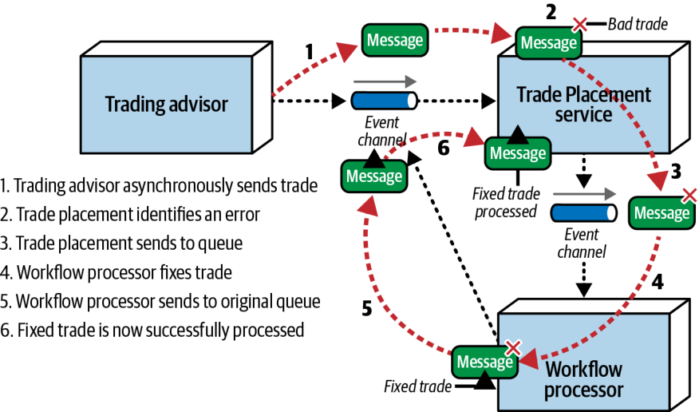
شکل ۱۵-۱۹. مدیریت خطا با الگوی رویداد گردشکار
یکی از پیامدهای استفاده از الگوی رویداد گردشکار این است که پیامهایی که به پردازندهٔ گردشکار فرستاده و سپس دوباره ارسال میشوند، خارج از ترتیب (out of sequence) پردازش میشوند. در مثال معاملاتیِ ما، ترتیب پیامها اهمیت دارد، زیرا همهٔ معاملات درون یک حساب مشخص باید به ترتیب پردازش شوند (برای نمونه، درون یک حساب کارگزاریِ واحد، SELL برای IBM باید پیش از BUY برای AAPL انجام شود). حفظ ترتیب پیامها درون یک بافتار مشخص (در اینجا، شمارهٔ حساب کارگزاری) پیچیده است، هرچند ناممکن نیست. یکی از راههای رسیدگی به این مسئله آن است که سرویس TradePlacement شمارهٔ حساب کارگزاریِ معاملهٔ خطادار را در صف بگذارد و ذخیره کند. هر معاملهای با همان شمارهٔ حساب کارگزاری در یک صف موقت برای پردازش بعدی ذخیره میشود (به ترتیبِ «نخست وارد، نخست خارج» یا FIFO). هنگامی که معاملهٔ خطادار اصلاح و پردازش شد، سرویس TradePlacement معاملات باقیماندهٔ همان حساب را از صف بیرون میآورد و به ترتیب پردازش میکند.
پیشگیری از گمشدن داده
معمارانی که با ارتباطهای ناهمگام سروکار دارند، همواره نگران گمشدن داده (data loss) هستند؛ یعنی وقتی رویداد یا پیامی از دست میرود یا هرگز به مقصد نهاییاش نمیرسد. خوشبختانه فنون پایه و آمادهای برای پیشگیری از گمشدن داده وجود دارد.
معماران میتوانند کانالهای رویداد را به شیوههای گوناگونی پیادهسازی کنند. بیشتر معماریهای رویدادمحور برای برانگیختن رویدادها و پاسخ به آنها از پروتکل پیامرسانی پیشرفتهٔ پیام (AMQP) استفاده میکنند. از نمونههای کارگزارهای AMQP میتوان به Amazon SNS (Simple Notification Service)، RabbitMQ، Solace و Azure Event Hubs اشاره کرد. در AMQP، رویدادها در یک مبادلهگر منتشر میشوند. مبادلهگر با استفاده از قواعد اتصالی (binding rules) که پردازندههای رویدادِ مصرفکننده تعیین کردهاند، رویداد را برای هر پردازندهٔ رویدادی که مشترکِ آن رویداد است به یک صف هدایت میکند. کارگزارهای AMQP همچنین میتوانند برای پیشگیری از گمشدن داده از چیزی بهره بگیرند که الگوی هدایت رویداد (Event Forwarding pattern) نام دارد؛ فنی که در این بخش شرح میدهیم.
یکی دیگر از پیادهسازیهای کانال رویداد، Jakarta Messaging API (که پیشتر Java Message Service یا JMS نام داشت) است که بهجای فرایند هدایت دومرحلهایای که صفها به کار میبرند، از موضوعها استفاده میکند. با این حال، Jakarta Messaging نیز میتواند برای پیشگیری از گمشدن داده از الگوی هدایت رویداد بهره بگیرد، به شرط آنکه پردازندههای رویدادی که به رویداد پاسخ میدهند بهصورت مشترکِ بادوام (durable subscriber) پیکربندی شده باشند. مشترک بادوام مشترکی است که دریافت رویداد برایش تضمین شده است. اگر پردازندهٔ رویداد از کار افتاده یا به هر دلیلی در دسترس نباشد، موضوعِ JMS رویداد را نگه میدارد تا پردازندهٔ رویدادِ مشترک دوباره در دسترس قرار گیرد.
پیادهسازیِ ممکنِ دیگر برای کانال رویداد، جریانسازی رویداد با استفاده از Kafka در نقش کارگزار رویداد (محصول نرمافزاریای که صفها و موضوعها را در بر دارد) است. فنون پیشگیری از گمشدن داده در جریانسازی رویداد با فنونی که در الگوی هدایت رویدادِ این بخش به کار میروند بسیار متفاوتاند. برای اطلاعات بیشتر دربارهٔ پیشگیری از گمشدن داده هنگام استفاده از این نوع کارگزار رویدادِ جریانی، به وبسایت Kafka مراجعه کنید.
سناریوی معمولی را در نظر بگیرید که در آن پردازندهٔ رویداد A رویدادی را بهصورت ناهمگام در یک کارگزار پیام منتشر میکند و این رویداد سرانجام به یک صف AMQP یا موضوع JMS میرسد. پردازندهٔ رویداد B به رویداد پاسخ میدهد و دادههای محموله را در یک پایگاهداده درج میکند. چنانکه در شکل ۱۵-۲۰ نشان داده شده، در این سناریو گمشدن داده به سه شیوه ممکن است رخ دهد:
پردازندهٔ رویداد A در حین انتشار رویداد، پیش از آنکه کارگزار رویداد بتواند تأییدی بفرستد، از کار میافتد؛ یا اینکه کارگزار رویداد تأییدی برای پردازندهٔ رویداد A میفرستد، اما پیش از آنکه پردازندهٔ رویداد دیگری رویداد را بپذیرد، خودش از کار میافتد.
پردازندهٔ رویداد B رویداد را از صف میپذیرد، اما پیش از آنکه بتواند آن را پردازش کند از کار میافتد.
پردازندهٔ رویداد B به دلیل خطایی در دادهها نمیتواند پیام را در پایگاهداده ماندگار کند.
هر یک از این موقعیتهای گمشدن داده را میتوان با الگوی هدایت رویداد مهار کرد.
شکل ۱۵-۲۰. جاهایی که گمشدن داده ممکن است در معماری رویدادمحور رخ دهد
در مشکل نخست، رویداد هرگز به صف نمیرسد یا کارگزار پیش از خواندهشدنِ رویداد از کار میافتد. برای رسیدگی به این مشکل، از صفهای پیامِ ماندگار (persistent message queues) همراه با ارسال همگام (synchronous send) استفاده کنید. صفهای پیامِ ماندگار از تحویل تضمینشده (guaranteed delivery) پشتیبانی میکنند: هنگامی که کارگزار رویداد، رویداد را دریافت میکند، نهتنها آن را برای بازیابی سریع در حافظه نگه میدارد، بلکه آن را در نوعی مخزن دادهٔ فیزیکی (مانند سیستم فایل یا پایگاهداده) نیز ماندگار میکند. اگر کارگزار رویداد از کار بیفتد، رویداد بهطور فیزیکی روی دیسک ذخیره شده است و وقتی کارگزار دوباره راهاندازی شود، همچنان برای پردازش در دسترس خواهد بود. ارسال همگام، انتظاری مسدودکننده (blocking wait) در پردازندهٔ رویداد ایجاد میکند و تا زمانی که کارگزار تأیید نکند که رویداد را در پایگاهداده ماندگار کرده است، آن را از برانگیختنِ رویداد بازمیدارد. این دو فن پایه از گمشدن داده میان تولیدکنندهٔ رویداد (event producer) و صف پیشگیری میکنند، زیرا رویداد یا هنوز نزد تولیدکنندهٔ رویداد است یا درون صف ماندگار شده است.
یک فن پایهٔ پیامرسانی به نام حالت تأیید از سوی کلاینت (client acknowledge mode) میتواند به مشکل دوم رسیدگی کند؛ یعنی وقتی پردازندهٔ رویداد B رویدادِ در دسترسِ بعدی را از صف برمیدارد و پیش از آنکه بتواند پردازشش کند از کار میافتد. بهطور پیشفرض، وقتی رویدادی از صف خوانده میشود، بیدرنگ از آن صف حذف میشود (که حالت تأیید خودکار (auto acknowledge mode) نامیده میشود). حالت تأیید از سوی کلاینت رویداد را در صف نگه میدارد و شناسهٔ کلاینت را به آن پیوست میکند تا هیچ مصرفکنندهٔ دیگری نتواند رویداد را بخواند یا پردازش کند. در این حالت، اگر پردازندهٔ رویداد B از کار بیفتد، رویداد همچنان در صف حفظ میشود و از گمشدن پیام پیشگیری میشود.
مشکل سوم، یعنی وقتی پردازندهٔ رویداد B به دلیل خطایی در دادهها نمیتواند رویداد را در پایگاهداده ماندگار کند، با تراکنشهای ACID و از راه ثبت در پایگاهداده (database commit) قابل رسیدگی است. همین که پردازندهٔ رویداد فرمان ثبت را به پایگاهداده صادر کند، ماندگاریِ دادهها در پایگاهداده تضمین میشود. پشتیبانی از آخرین مشارکتکننده (last participant support یا LPS) با تأیید اینکه همهٔ پردازشها کامل شدهاند و رویداد ماندگار شده است، رویداد را از صفِ ماندگار حذف میکند. این کار تضمین میکند که رویداد در مسیر انتقال از پردازندهٔ رویداد A تا پایگاهداده گم نشده است. این فنون در شکل ۱۵-۲۱ نشان داده شدهاند.
شکل ۱۵-۲۱. پیشگیری از گمشدن داده در معماری رویدادمحور
پردازش درخواست-پاسخ
تا اینجای این فصل، با درخواستهای ناهمگامی سروکار داشتیم که به پاسخ فوری از مصرفکنندهٔ رویداد نیاز ندارند. اما پردازندههای رویدادی که بیدرنگ به اطلاعاتی از پردازندهٔ رویدادِ دیگری نیاز دارند چه؟ برای نمونه، پردازندهای که پیش از برانگیختنِ یک رویداد باید منتظر نوعی شناسهٔ تأیید یا تصدیق بماند. این سناریو برای کاملکردنِ درخواست به ارتباط همگام نیاز دارد.
در EDA، ارتباط همگام معمولاً از راه پیامرسانی درخواست-پاسخ (request-reply messaging) انجام میشود (که گاهی ارتباط شبههمگام (pseudosynchronous) نیز نامیده میشود). هر کانال رویداد در پیامرسانی درخواست-پاسخ از دو صف تشکیل میشود: صف درخواست (request queue) و صف پاسخ (reply queue). تولیدکنندهٔ پیام (message producer) که درخواست اولیهٔ اطلاعات را مطرح میکند، دادهها را بهصورت ناهمگام به صف درخواست میفرستد و سپس کنترل به تولیدکنندهٔ پیام بازمیگردد. تولیدکنندهٔ پیام سپس پردازشهای دیگری انجام میدهد و سرانجام روی صف پاسخ منتظر پاسخ میماند. مصرفکنندهٔ پیام (message consumer) پیام را دریافت و پردازش میکند و سپس پاسخ را به صف پاسخ میفرستد. تولیدکنندهٔ رویداد پیامِ حاوی دادههای پاسخ را دریافت میکند. این جریان پایه در شکل ۱۵-۲۲ نشان داده شده است.
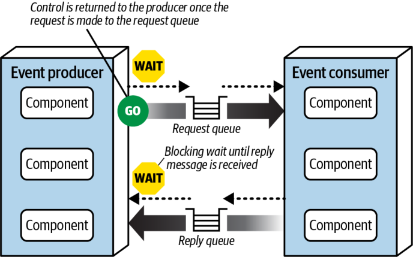
شکل ۱۵-۲۲. پردازش پیام درخواست-پاسخ
دو راه اصلی برای پیادهسازیِ پیامرسانی درخواست-پاسخ وجود دارد. نخستین (و رایجترین) فن این است که یک فیلد شناسهٔ تناظر (correlation ID یا CID) در سرآیندِ پیامِ پاسخ قرار دهیم که معمولاً برابر با شناسهٔ پیامِ درخواستِ اصلی تنظیم میشود (که در شکل ۱۵-۲۳ بهسادگی ID نامیده شده است). شیوهٔ کار آن چنین است:
تولیدکنندهٔ رویداد پیامی به صف درخواست میفرستد و شناسهٔ یکتای پیام (ID ۱۲۴) را ثبت میکند. توجه کنید که CID در این حالت null است.
تولیدکنندهٔ رویداد با یک پالایهٔ پیام (message filter) (که گزینشگر پیام (message selector) نیز نامیده میشود) روی صف پاسخ انتظاری مسدودکننده را آغاز میکند؛ پالایهای که در آن CID در سرآیند پیام برابر با شناسهٔ پیامِ اصلی (۱۲۴) است. دو پیام در صف پاسخ وجود دارد: ID ۸۵۵ با CID ۱۲۰، و ID ۸۵۶ با CID ۱۲۲. هیچیک از این پیامها برداشته نمیشود، زیرا شناسهٔ تناظرِ هیچکدام با آنچه مصرفکنندهٔ رویداد در جستوجویش است (CID ۱۲۴) مطابقت ندارد.
مصرفکنندهٔ رویداد پیام (ID ۱۲۴) را دریافت و درخواست را پردازش میکند.
مصرفکنندهٔ رویداد پیام پاسخِ حاوی جواب را میسازد و CID را در سرآیند پیام برابر با شناسهٔ پیامِ اصلی (۱۲۴) تنظیم میکند.
مصرفکنندهٔ رویداد شناسهٔ پیامِ تازه (۸۵۷) را به صف پاسخ میفرستد.
تولیدکنندهٔ رویداد پیام را دریافت میکند، زیرا CID (۱۲۴) با گزینشگر پیامِ گام ۲ مطابقت دارد.
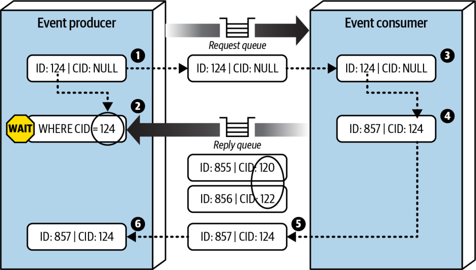
شکل ۱۵-۲۳. پردازش پیام درخواست-پاسخ با استفاده از شناسهٔ تناظر
راه دیگر پیادهسازیِ پیامرسانی درخواست-پاسخ، استفاده از یک صف موقت (temporary queue) بهعنوان صف پاسخ است. صف موقت به یک درخواستِ مشخص اختصاص دارد؛ هنگام مطرحشدنِ درخواست ساخته و با پایان درخواست حذف میشود. این فن، چنانکه در شکل ۱۵-۲۴ نشان داده شده، به شناسهٔ تناظر نیازی ندارد، زیرا صف موقت صفی اختصاصی است که تنها تولیدکنندهٔ رویداد برای همان درخواستِ مشخص از آن آگاه است. فن صف موقت به این شرح کار میکند:
تولیدکنندهٔ رویداد یک صف موقت میسازد (یا بسته به کارگزار پیام، این صف بهطور خودکار ساخته میشود) و پیامی به صف درخواست میفرستد و نام صف موقت را در سرآیند reply-to (یا صفتِ سفارشیِ توافقشدهٔ دیگری در سرآیند پیام) منتقل میکند.
تولیدکنندهٔ رویداد روی صف پاسخِ موقت انتظاری مسدودکننده را آغاز میکند. هیچ گزینشگر پیامی لازم نیست، زیرا هر پیامی که به این صف فرستاده شود تنها به تولیدکنندهٔ رویدادی تعلق دارد که پیام اصلی را فرستاده است.
مصرفکنندهٔ رویداد پیام را دریافت میکند، درخواست را پردازش میکند و پیام پاسخی را به صف پاسخی میفرستد که نامش در سرآیند reply-to آمده است.
پردازندهٔ رویداد پیام را دریافت میکند و صف موقت را حذف میکند.
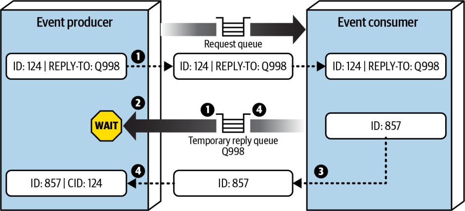
شکل ۱۵-۲۴. پردازش پیام درخواست-پاسخ با استفاده از صف موقت
هرچند فن صف موقت بسیار سادهتر است، کارگزار پیام باید برای هر درخواست یک صف موقت بسازد و سپس بیدرنگ آن را حذف کند. این کار میتواند کارگزار را بهطور چشمگیری کند کند و بر کارایی و پاسخگوییِ کلی اثر بگذارد، بهویژه در حجم بالای پیامها و همروندیِ (concurrency) زیاد. به همین دلیل، معمولاً استفاده از فن شناسهٔ تناظر را توصیه میکنیم.
معماری رویدادمحورِ میانجیدار
تا اینجای این فصل بر EDA کرئوگرافیشده (choreographed) تمرکز کردهایم که در آن پردازندههای رویداد با قابلیتهای پخش، رویدادها را برمیانگیزند و چندین پردازندهٔ رویداد به رویداد پاسخ میدهند. اما گاهی ممکن است معمار بخواهد کنترل بیشتری بر پردازش یک رویداد داشته باشد. در این حالت، معمار میتواند از شکل ارکسترهشدهای (orchestrated) از EDA استفاده کند که توپولوژی میانجی (mediator topology) نام دارد.
توپولوژی میانجی برخی از کاستیهای توپولوژیِ استانداردِ EDA کرئوگرافیشده را که تا اینجای این فصل شرح دادیم برطرف میکند. محور این توپولوژی یک میانجی رویداد (event mediator) است که گردشکارِ رویدادهای آغازگری را که به هماهنگی میان چندین پردازندهٔ رویداد نیاز دارند، مدیریت و کنترل میکند. مؤلفههای معماریِ تشکیلدهندهٔ توپولوژی میانجی عبارتاند از: رویداد آغازگر، صف رویداد (event queue)، میانجی رویداد، کانالهای رویداد و پردازندههای رویداد.
نکتهٔ مهم این است که توپولوژی میانجیدار معمولاً بهجای رویدادها از پیامها استفاده میکند (بخش «رویداد در برابر پیام» در صفحهٔ ۲۳۲ را ببینید). این پیامها عموماً فرماناند (مانند ship_order)، نه رویدادهایی که رخ دادهاند (مانند order_shipped).
مانند توپولوژی کرئوگرافیشده، رویداد آغازگر همان چیزی است که کل فرایند را به راه میاندازد. اما در توپولوژی میانجی (شکل ۱۵-۲۵)، یک میانجی رویداد رویداد آغازگر را میپذیرد. این میانجی تنها گامهای لازم برای پردازش رویداد را میداند، پس پیامهای مشتقِ متناظر را تولید میکند و آنها را بهصورت نقطهبهنقطه به کانالهای پیامِ اختصاصی (معمولاً صفها) میفرستد. سپس پردازندههای رویداد به کانالهای رویدادِ اختصاصی گوش میدهند، پیامها را پردازش میکنند و (معمولاً) پس از اتمام کارشان به میانجی پاسخ میدهند. پردازندههای رویداد در توپولوژی میانجی، کاری را که انجام دادهاند از راه پیامهای مشتقِ افزوده به بقیهٔ سیستم اعلام نمیکنند.
در بیشتر پیادهسازیهای توپولوژی میانجی، چندین میانجی وجود دارد که هر یک معمولاً به یک حوزه یا گروهی از رویدادها مربوط است. این کار از پیدایش یک نقطهٔ شکست واحد (single point of failure) که در این توپولوژی میتواند مسئلهساز باشد جلوگیری میکند و توان عملیاتی و کاراییِ کلی را افزایش میدهد. برای نمونه، یک میانجی مشتری ممکن است همهٔ رویدادهای مربوط به مشتری (مانند نامنویسی مشتریان تازه و بهروزرسانی نمایه) را مدیریت کند، در حالی که یک میانجی سفارش فعالیتهای مربوط به سفارش (مانند افزودن کالا به سبد خرید و تسویهحساب) را بر عهده دارد.
شیوهای که معماران برای پیادهسازیِ میانجی رویداد برمیگزینند، معمولاً به ماهیت و پیچیدگی پیامهایی بستگی دارد که میانجی رویداد پردازش میکند. برای نمونه، برای رویدادهایی که به مدیریت خطا و ارکستراسیونِ ساده نیاز دارند، میانجیهایی مانند Apache Camel، Mule ESB یا Spring Integration معمولاً کفایت میکنند. جریانهای پیام (message flows) و مسیرهای پیام (message routes) در این نوع میانجیها معمولاً بهصورت سفارشی با کد برنامهنویسی (مانند Java یا C#) نوشته میشوند تا گردشکارِ پردازش رویداد را کنترل کنند.
اما اگر گردشکار رویداد به پردازشهای شرطیِ فراوان و چندین مسیر پویا با دستورالعملهای پیچیدهٔ مدیریت خطا نیاز داشته باشد، میانجیای مانند Apache ODE یا Oracle BPEL Process Manager گزینهٔ مناسبتری خواهد بود. این میانجیها بر زبان اجرای فرایند کسبوکار (Business Process Execution Language یا BPEL) استوارند؛ ساختاری شبیه به XML که گامهای لازم برای پردازش یک رویداد را توصیف میکند. مصنوعات BPEL همچنین عناصر ساختاریافتهای در بر دارند که برای مدیریت خطا، تغییر مسیر (redirection)، چندپخشی (multicasting) و مانند آن به کار میروند. BPEL زبانی قدرتمند اما یادگیریاش نسبتاً پیچیده است، از این رو معماران معمولاً میانجیها را با ابزارهای گرافیکیِ (GUI) مجموعهٔ موتور BPEL میسازند.
شکل ۱۵-۲۵. توپولوژی میانجی
BPEL برای گردشکارهای پیچیده و پویا مناسب است، اما برای گردشکارهای رویدادی که تراکنشهای طولانیمدت (long-running transactions) با دخالت انسان در سراسر فرایند رویداد دارند، بهخوبی کار نمیکند. برای نمونه، فرض کنید معاملهای از راه رویداد آغازگرِ place_trade ثبت میشود. میانجی رویداد این رویداد را میپذیرد، اما در حین پردازش درمییابد که به تأیید دستی نیاز است، زیرا معامله از تعداد مشخصی سهم فراتر رفته است. اکنون میانجی رویداد باید پردازش رویداد را متوقف کند، به یک معاملهگر ارشد اطلاع دهد تا تأیید دستی را بگیرد، و منتظر آن تأیید بماند. در چنین مواردی، یک موتور مدیریت فرایند کسبوکار (Business Process Management یا BPM)، مانند jBPM، مناسبتر از بهکاربردنِ یک میانجی رویداد خواهد بود.
پیش از آنکه نوع میانجی رویدادی را که پیادهسازی میکنید برگزینید، مهم است بدانید چه نوع رویدادهایی را پردازش خواهد کرد. برای رویدادهای پیچیده و طولانیمدتی که تعامل انسانی دارند، استفاده و نگهداریِ Apache Camel بسیار دشوار خواهد بود. به همین قیاس، استفاده از یک موتور BPM برای جریانهای رویدادِ ساده، ماهها تلاش را صرف کاری میکند که Apache Camel میتوانست در عرض چند روز انجام دهد.
البته بهندرت پیش میآید که همهٔ رویدادها بهطور منظم در یک ردهٔ پیچیدگی جای بگیرند. توصیهٔ ما این است که رویدادها را به سه ردهٔ ساده، دشوار یا پیچیده طبقهبندی کنید و هر رویداد را از راه یک میانجی ساده، مانند Apache Camel یا Mule، عبور دهید. میانجی ساده میتواند خودش رویداد را مدیریت کند یا بر پایهٔ آن طبقهبندیِ پیچیدگی، آن را به میانجی رویدادِ پیچیدهترِ دیگری هدایت کند. این مدل واگذاری میانجی (mediator delegation model)، که در شکل ۱۵-۲۶ نشان داده شده است، تضمین میکند که همهٔ انواع رویدادها به دست همان نوع میانجیای مدیریت شوند که آنها را به کاراترین شکل پردازش میکند.
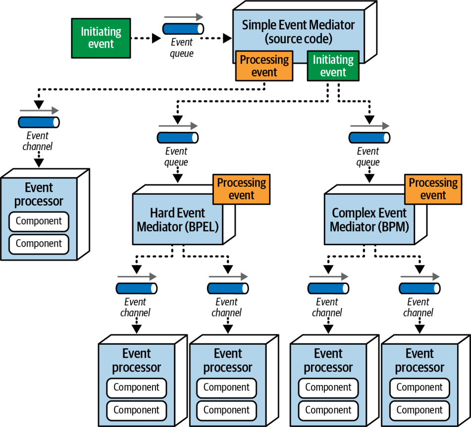
شکل ۱۵-۲۶. واگذاری رویداد به نوع مناسبِ میانجی رویداد
در شکل ۱۵-۲۶ توجه کنید که وقتی گردشکار رویداد به اندازهای ساده است که میانجی ساده بتواند بهتمامی آن را مدیریت کند، Simple Event Mediator پیامی مشتق تولید میکند و میفرستد. اما وقتی رویداد آغازگر در ردهٔ دشوار یا پیچیده طبقهبندی شود، Simple Event Mediator رویداد آغازگرِ اصلی را به میانجیهای متناظر (BPEL یا BPM) هدایت میکند. Simple Event Mediator که رویداد اصلی را رهگیری کرده است، ممکن است همچنان مسئول دانستنِ زمان کاملشدنِ آن رویداد باشد، یا ممکن است بهسادگی کل گردشکار (از جمله اطلاعرسانی به کلاینت) را به میانجیهای دیگر واگذار کند.
برای بررسی شیوهٔ کار توپولوژی میانجی، همان سیستم ثبت سفارش خردهفروشی را در نظر بگیریم که در بخش توپولوژی کرئوگرافیشده شرح دادیم، اما این بار با توپولوژی میانجی. میانجی گامهای لازم برای پردازش این رویدادِ مشخص را میداند. جریان رویدادِ درونیِ مؤلفهٔ میانجی در شکل ۱۵-۲۷ نشان داده شده است.
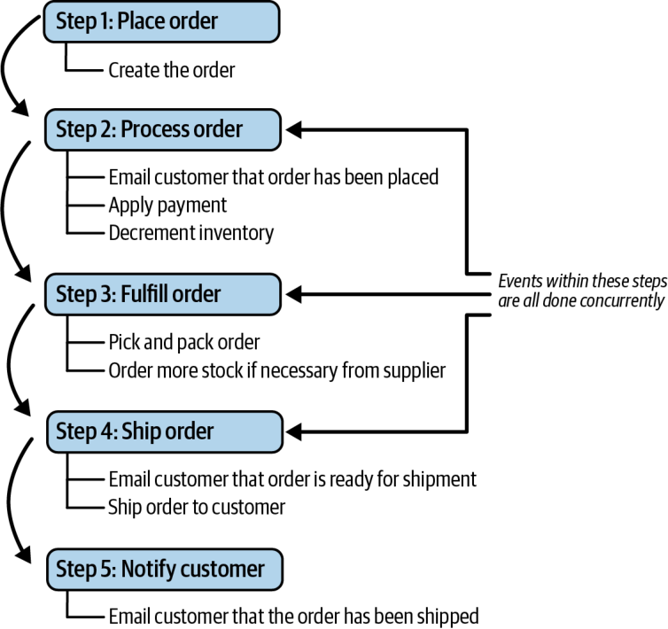
شکل ۱۵-۲۷. گامهای میانجی برای ثبت سفارش
همانند مثال پیشین، همان رویداد آغازگر (place order) از راه یک صف اختصاصی برای پردازش به میانجی رویداد فرستاده میشود. میانجی Customer این رویداد آغازگر را برمیدارد و بر پایهٔ جریان شکل ۱۵-۲۷ شروع به تولید پیامهای مشتق میکند. رویدادهایی که در گامهای ۲، ۳ و ۴ نشان داده شدهاند، درون هر گام بهصورت همزمان و میان گامها بهصورت پیاپی انجام میشوند. به بیان دیگر، گام ۳ (آمادهسازی سفارش) باید کامل و تأیید شود تا بتوان در گام ۴ (ارسال سفارش) به مشتری اطلاع داد که سفارش آمادهٔ ارسال است.
میانجی Customer همین که رویداد آغازگر را دریافت کند، پیام مشتقِ create order را تولید میکند و آن را به صف order placement میفرستد (شکل ۱۵-۲۸ را ببینید). پردازندهٔ رویداد Order Placement پیام را میپذیرد، سفارش را اعتبارسنجی و ایجاد میکند و در پاسخ، تأییدیه و شناسهٔ سفارش را برای میانجی میفرستد. در این مرحله، میانجی ممکن است آن شناسهٔ سفارش را برای مشتری بفرستد تا نشان دهد سفارش ثبت شده است، یا ممکن است ناچار باشد تا کاملشدنِ همهٔ گامها ادامه دهد (این به قواعد کسبوکاریِ مشخص دربارهٔ ثبت سفارش بستگی دارد).
شکل ۱۵-۲۸. گام ۱ از مثال میانجی
اکنون که گام ۱ کامل شده است، میانجی به گام ۲ میرود (شکل ۱۵-۲۹ را ببینید) و سه پیام مشتق را همزمان تولید میکند: email customer، apply payment و adjust inventory. میانجی هر سه را به صفهای مربوط به آنها میفرستد. هر سه پردازندهٔ رویداد این پیامها را دریافت میکنند، وظایف مربوط به خود را انجام میدهند و به میانجی اطلاع میدهند که پردازششان کامل شده است. میانجی باید پیش از رفتن به گام ۳ منتظر بماند تا از هر سه فرایندِ موازی تأییدیه دریافت کند. اگر در یکی از پردازندههای رویدادِ موازی خطایی رخ دهد، میانجی میتواند کنش اصلاحی انجام دهد (در ادامهٔ همین بخش بیشتر به آن میپردازیم).
شکل ۱۵-۲۹. گام ۲ از مثال میانجی
همین که میانجی از همهٔ پردازندههای رویدادِ گام ۲ تأییدیهٔ موفقیت دریافت کند، میتواند برای آمادهسازیِ سفارش به گام ۳ برود (شکل ۱۵-۳۰ را ببینید). باز هم هر دو پیام (fulfill order و order stock) میتوانند همزمان رخ دهند. پردازندههای رویداد Order Fulfillment و Warehouse پیامها را میپذیرند، کارشان را انجام میدهند و تأییدیهای به میانجی بازمیگردانند.
شکل ۱۵-۳۰. گام ۳ از مثال میانجی
میانجی برای ارسال سفارش به گام ۴ میرود (شکل ۱۵-۳۱ را ببینید). این گام دو پیام مشتق تولید میکند: پیام ship order و یک پیام email customer دیگر با اطلاعاتی مشخص دربارهٔ کاری که باید انجام شود (آگاهکردنِ مشتری از اینکه سفارش آمادهٔ ارسال است).
شکل ۱۵-۳۱. گام ۴ از مثال میانجی
سرانجام، میانجی به گام ۵ میرود (شکل ۱۵-۳۲ را ببینید) و پیام email customer بافتارمندِ دیگری تولید میکند تا به مشتری اطلاع دهد که سفارش ارسال شده است. گردشکار در اینجا پایان مییابد. میانجی جریان رویداد آغازگر را کاملشده علامت میزند و همهٔ حالتهای مربوط به رویداد آغازگر را حذف میکند.
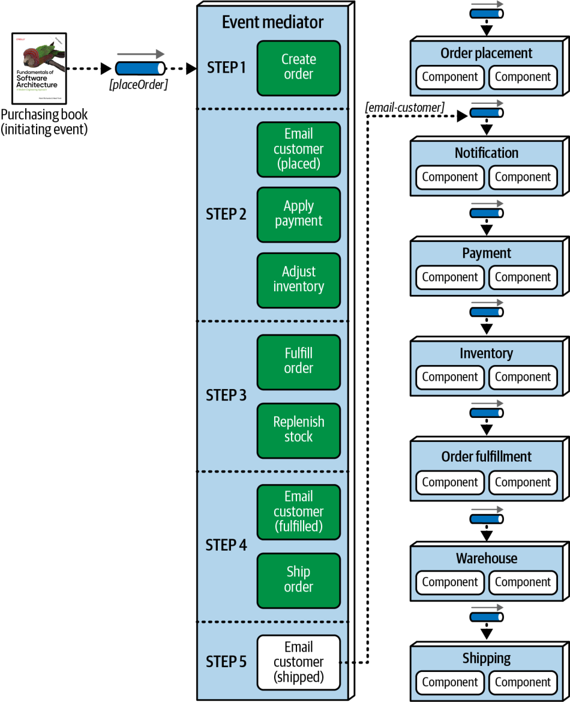
شکل ۱۵-۳۲. گام ۵ از مثال میانجی
در این توپولوژی، برخلاف توپولوژی کرئوگرافیشده، مؤلفهٔ میانجی از گردشکار آگاه است و بر آن کنترل دارد. این مؤلفه میتواند حالت رویداد را نگه دارد و مدیریت خطا، بازیابیپذیری و قابلیتهای راهاندازی دوباره (restart) را بر عهده بگیرد. برای نمونه، فرض کنید در مثال ما پرداخت اعمال نشده است، زیرا کارت اعتباری منقضی شده است. هنگامی که میانجی این وضعیت خطا را دریافت میکند، میداند که تا پرداخت اعمال نشود، سفارش را نمیتوان آماده کرد (گام ۳)؛ پس گردشکار را متوقف میکند و حالت درخواست را در مخزن دادهٔ ماندگارِ (persistent datastore) خود ثبت میکند. هنگامی که پرداخت سرانجام اعمال شد، گردشکار میتواند از همان جایی که متوقف شده بود (در این مثال، آغاز گام ۳) دوباره آغاز شود.
هرچند توپولوژی میانجی مسائل مربوط به توپولوژی کرئوگرافیشده را برطرف میکند، عیبهای خاص خود را دارد. نخست اینکه مدلسازیِ اعلانیِ پردازش پویایی که درون یک جریان رویدادِ پیچیده رخ میدهد بسیار دشوار است. در نتیجه، بسیاری از گردشکارها در توپولوژی میانجی تنها پردازشهای عمومی را مدیریت میکنند و برای رسیدگی به ماهیت پویای پردازش رویداد پیچیده، مانند وضعیتهای کمبود موجودی (out-of-stock) یا دیگر خطاهای غیرمعمول، از مدلی ترکیبی بهره میبرند که توپولوژیهای میانجی و کرئوگرافیشده را با هم میآمیزد. افزون بر این، هرچند پردازندههای رویداد میتوانند به همان شیوهٔ توپولوژی کرئوگرافیشده بهآسانی مقیاسپذیر شوند، میانجی نیز باید مقیاسپذیر شود؛ چیزی که گاهی در جریان کلیِ پردازش رویداد گلوگاه (bottleneck) پدید میآورد. پردازندههای رویداد در توپولوژی میانجی به اندازهٔ توپولوژی کرئوگرافیشده از هم جدا نیستند. سرانجام، کارایی در این توپولوژی چندان خوب نیست، زیرا میانجی پردازش رویداد را کنترل میکند.
مصالحه میان توپولوژیهای کرئوگرافیشده و میانجی در اصل به سنجیدنِ کنترل گردشکار و توانایی مدیریت خطا در برابر کارایی و مقیاسپذیریِ بالا خلاصه میشود. هرچند کارایی و مقیاسپذیری در توپولوژی میانجی همچنان خوب است، به بلندیِ توپولوژی کرئوگرافیشده نیست.
توپولوژیهای داده
با این همه گفتوگو دربارهٔ رویدادها و پردازش رویداد، بهآسانی ممکن است جنبهٔ دادهٔ EDA از یاد برود. توپولوژیهای پایگاهداده جنبهای یگانه و جالب از این سبک معماریاند. این سبک گزینههای فراوانی پیش رو میگذارد که هر یک مصالحههای چشمگیری دارند و میتوانند اثر بزرگی بر کل معماری بگذارند. برای شرح توپولوژیهای پایگاهدادهٔ گوناگون در EDA، از نسخهٔ سادهشدهای از مثالی که در شکل ۱۵-۳ نشان دادیم استفاده میکنیم (شکل ۱۵-۳۳ را ببینید).
هنگامی که مشتری سفارشی ثبت میکند، پردازندهٔ رویداد Order Placement سفارش را ایجاد میکند و سپس رویداد order placed را برمیانگیزد که هر دو پردازندهٔ رویداد Payment و Inventory به آن پاسخ میدهند. پس از اعمال پرداخت، پردازندهٔ رویداد Order Fulfillment به بستهبندِ سفارش کمک میکند سفارش را آماده کند و سپس رویداد order fulfilled را برمیانگیزد. پردازندهٔ رویداد Shipping با ارسال سفارش برای مشتری به رویداد order fulfilled پاسخ میدهد و بدین ترتیب پردازش را کامل و درخواست مشتری را برآورده میکند.
شکل ۱۵-۳۳. نمونهٔ سادهشدهای از سیستم ثبت سفارشِ مثال با استفاده از EDA
یکی از پیچیدگیهای EDA این است که پردازندهٔ رویداد Order Placement باید دو تکه اطلاعات را بداند: اینکه در حال حاضر چند قلم کالا موجود است، و اینکه بر پایهٔ موقعیت مکانی مشتری چه گزینههای ارسالی در دسترس است. شیوهٔ به دست آوردنِ این اطلاعات به نوع توپولوژی پایگاهدادهای بستگی دارد که معماری به کار میبرد. بیایید هر یک از گزینههای توپولوژی پایگاهداده را بررسی کنیم تا مصالحههای چشمگیرشان را ببینیم.
توپولوژی پایگاهدادهٔ تکپارچه
نخستین، و شاید رایجترین، توپولوژی پایگاهدادهای که در EDA به کار میرود، توپولوژی پایگاهدادهٔ تکپارچهٔ واحد است. در این توپولوژی، همهٔ دادهها از راه یک پایگاهدادهٔ مرکزی در دسترس همهٔ پردازندههای رویداد قرار دارند.
مزیت اصلی توپولوژی پایگاهدادهٔ تکپارچه این است که هر پردازندهٔ رویداد میتواند دادههای مورد نیازش را مستقیماً از پایگاهداده پرسوجو کند، بیآنکه ناچار باشد بهصورت همگام با پردازندههای رویدادِ دیگر ارتباط برقرار کند. این مزیتی چشمگیر است، زیرا معماریهای رویدادمحور بر پردازندههای رویدادِ بهشدت جدا از همی تکیه دارند که از راه ارتباطهای ناهمگام با هم ارتباط میگیرند. در شکل ۱۵-۳۴، پردازندهٔ رویداد Order Placement میتواند بهسادگی از پایگاهدادهٔ تکپارچهٔ مرکزی پرسوجو کند تا تعداد اقلام موجود و گزینههای ارسالِ مشتری را بازیابی کند.
شکل ۱۵-۳۴. در توپولوژی پایگاهدادهٔ تکپارچه، دادهها مستقیماً از پایگاهداده در دسترساند
هرچند توپولوژی پایگاهدادهٔ تکپارچه از جداسازی پشتیبانی میکند و ارتباط میان پردازندههای رویداد را محدود میسازد، عیبهای دردسرسازی نیز به همراه دارد که نخستینِ آنها تحمل خطاست. اگر پایگاهدادهٔ تکپارچهٔ مرکزی از کار بیفتد یا برای نگهداری خاموش شود، همهٔ پردازندههای رویداد از دسترس خارج میشوند.
مسئلهٔ دوم مقیاسپذیری است. از آنجا که معماریهای رویدادمحور از ارتباط ناهمگام استفاده میکنند، هر پردازندهٔ رویداد میتواند مستقل از دیگران مقیاسپذیر شود. کانال رویداد در اصل نقش یک نقطهٔ فشار معکوس (backpressure point) را دارد تا پردازندههای رویدادِ منفرد بتوانند به اندازهٔ لازم مقیاسپذیر شوند، فارغ از اینکه پردازندههای رویدادِ دیگر نیز مقیاسپذیر شوند یا نه. اما اگر همهٔ پردازندههای رویداد همزمان از یک پایگاهداده پرسوجو کنند و در آن بنویسند، پایگاهداده باید برای پاسخ به این تقاضاها مقیاسپذیر شود. بسیاری از پایگاهدادهها در بارهای همروندیِ بالا از پسِ این کار برنمیآیند.
مسئلهٔ سوم کنترل تغییر است. هنگامی که ساختار پایگاهداده تغییر میکند (مانند حذف یک ستون یا صفت)، چندین پردازندهٔ رویداد تحت تأثیر قرار میگیرند و باید حتی برای یک تغییرِ واحد در پایگاهداده با هم هماهنگ شوند.
سرانجام، توپولوژی پایگاهدادهٔ تکپارچه به دلیل پایگاهدادهٔ تکپارچهٔ مشترک، ناگزیر یک کوانتوم معماریِ واحد پدید میآورد.
توپولوژی پایگاهدادهٔ حوزهای
یکی دیگر از توپولوژیهای پایگاهدادهٔ ممکن در EDA، توپولوژی پایگاهدادهٔ حوزهای (domain database topology) است که پردازندههای رویداد را در حوزههای گوناگونی گروهبندی میکند و هر حوزه مالکِ پایگاهدادهٔ خودش است (شکل ۱۵-۳۵).
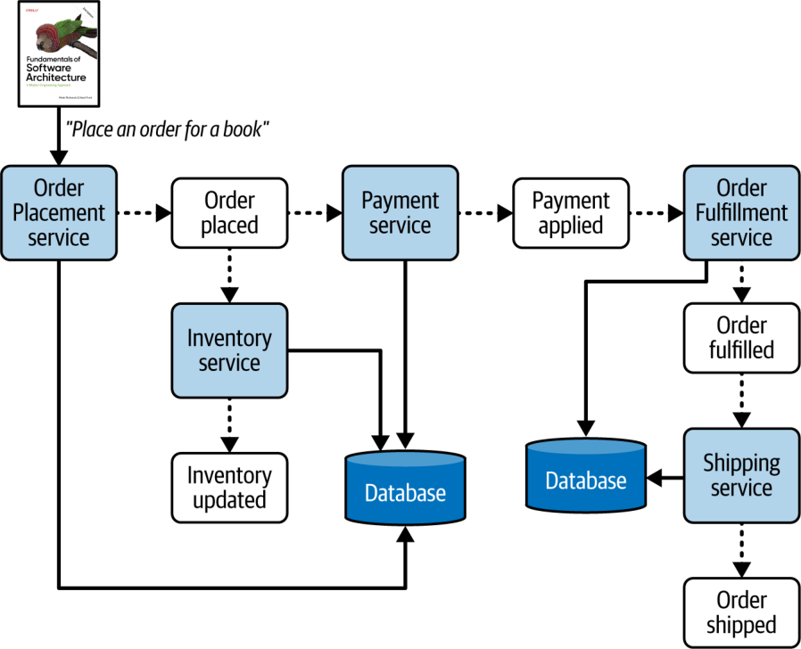
شکل ۱۵-۳۵. توپولوژی پایگاهدادهٔ حوزهای برای هر حوزه از پایگاهدادهای جداگانه استفاده میکند
مزیتهای اصلی توپولوژی پایگاهدادهٔ حوزهای نسبت به توپولوژی پایگاهدادهٔ تکپارچه، که از افراز حوزهای سرچشمه میگیرند، تحمل خطا، مقیاسپذیری و کنترل تغییرِ بهتر است. در مثالی که در شکل ۱۵-۳۵ نشان داده شده، اگر پایگاهدادهٔ حوزهٔ پردازش سفارش (همان پایگاهدادهای که به پردازندههای رویداد Order Fulfillment و Order Shipping مربوط است) از کار بیفتد یا به دلیل نگهداری در دسترس نباشد، حوزهٔ ثبت سفارش همچنان کاملاً عملیاتی است و میتواند به پذیرش سفارشها ادامه دهد. کانال رویدادی که رویداد مشتقِ payment applied را در بر دارد، نقش نقطهٔ فشار معکوس را بازی میکند و رویدادها را تا زمانی که پایگاهدادهٔ پردازش سفارش در دسترس قرار گیرد در صف نگه میدارد. همین امر دربارهٔ مقیاسپذیری و کنترل تغییر نیز صادق است: هر پایگاهدادهٔ حوزهای تنها باید بر پایهٔ پردازندههای رویدادِ مشخصِ حوزهٔ خود مقیاسپذیر شود، و اگر ساختار پایگاهداده تغییر کند، تنها همان پردازندههای رویدادِ محدود به آن حوزه باید تغییر کنند.
اما دو تکه اطلاعاتی را در نظر بگیرید که پردازندهٔ رویداد Order Placement به آنها نیاز دارد: تعداد کتابهایی که در حال حاضر موجود است و گزینههای ارسال. در توپولوژی پایگاهدادهٔ حوزهای، پردازندهٔ رویداد Order Placement میتواند بهسادگی از پایگاهدادهٔ حوزهٔ خود پرسوجو کند تا موجودی کتاب را به دست آورد، همانند شیوهای که این اطلاعات را در توپولوژی پایگاهدادهٔ تکپارچه بازیابی میکرد. اما برای بازیابیِ گزینههای ارسال باید فراخوانی همگامی به پردازندهٔ رویداد Order Shipping انجام دهد و بدین ترتیب این سرویسها را بهصورت همگام به هم کوپل کند (شکل ۱۵-۳۶ را ببینید).
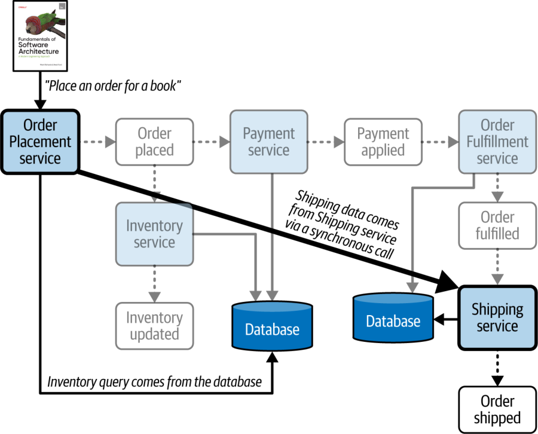
شکل ۱۵-۳۶. دادههایی که پردازندهٔ رویداد Order Placement به آنها نیاز دارد ممکن است ارتباط همگام با یک پردازندهٔ رویداد در حوزهای دیگر را لازم کنند
معماران باید بکوشند در معماریای بهشدت پویا و جدا از هم مانند EDA از کوپلینگ همگام (synchronous coupling) پرهیز کنند. فراخوانیهای همگام میتوانند به تحمل خطا و مقیاسپذیری آسیب بزنند و بسیاری از مزیتهای استفاده از این توپولوژی را از میان ببرند. همیشه بررسی کنید که حوزهها نسبتاً مستقل از یکدیگر باقی بمانند و فراخوانیهای میانسرویسیِ همگام را تا حد امکان کاهش دهید. اگر ارتباط همگامِ بیش از اندازهای میان پردازندههای رویداد لازم باشد، مرزهای حوزه را دوباره ارزیابی کنید، حوزهها را در یک حوزهٔ واحد ادغام کنید یا به توپولوژی پایگاهدادهٔ تکپارچه روی آورید.
توپولوژی دادهٔ اختصاصی
گزینهٔ کارآمد دیگر در EDA، توپولوژی پایگاهدادهٔ اختصاصی (dedicated database topology) است که در دنیای میکروسرویسها معمولاً الگوی پایگاهداده به ازای هر سرویس نامیده میشود. در این توپولوژی پایگاهداده، هر پردازندهٔ رویداد در یک زمینهٔ محدودِ تنگاتنگ، مالکِ پایگاهدادهٔ اختصاصیِ خودش است، همانند میکروسرویسها (بخش «توپولوژیهای داده» در صفحهٔ ۳۴۸ در فصل ۱۸ را ببینید). این توپولوژی در شکل ۱۵-۳۷ نشان داده شده است.
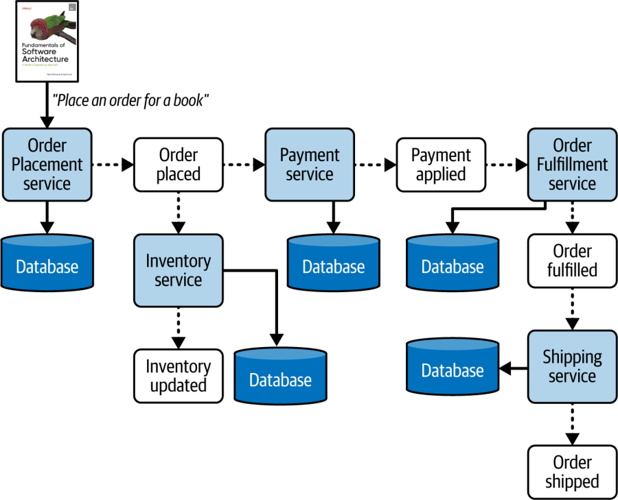
شکل ۱۵-۳۷. توپولوژی پایگاهدادهٔ اختصاصیِ EDA برای هر پردازندهٔ رویداد از پایگاهدادهای جداگانه استفاده میکند
جای شگفتی نیست که توپولوژی پایگاهدادهٔ اختصاصی در میان همهٔ توپولوژیهای موجود، بالاترین سطح تحمل خطا، مقیاسپذیری و کنترل تغییر را دارد. اگر یک پردازندهٔ رویداد یا پایگاهداده از کار بیفتد، این قطعی تنها به همان پردازندهٔ رویداد محدود میماند و همهٔ پردازندههای رویدادِ دیگر بهطور عادی کار میکنند. پایگاهدادهها تنها باید بر پایهٔ همان پردازندهٔ رویدادِ واحدِ درون زمینهٔ محدودشان مقیاسپذیر شوند و همین امر این توپولوژی را مقیاسپذیرترین توپولوژی از سه توپولوژیِ این بخش میکند. سرانجام، تغییرات ساختار پایگاهداده تنها بر پردازندهٔ رویدادی اثر میگذارند که به آن پایگاهداده متصل است.
از جنبهٔ منفی، بسته به پشتهٔ فناوری پایگاهداده (database technology stack)، این گزینه ممکن است بسیار پرهزینه باشد. اما شاید بزرگترین عیب آن، کوپلینگ پویای همگام میان پردازندههای رویداد باشد. برای نشاندادنِ این عیب، دوباره به دو تکه اطلاعاتی نگاه کنید که پردازندهٔ رویداد Order Placement برای پردازشش لازم دارد: موجودی کتاب و گزینههای ارسال. در این توپولوژی، پردازندهٔ رویداد Order Placement برای به دست آوردنِ اطلاعات لازم ناچار است هم به پردازندهٔ رویداد Inventory و هم به پردازندهٔ رویداد Order Shipment فراخوانیهای همگام انجام دهد و بدین ترتیب نقاط کوپلینگ همگامِ محکمی در سراسر معماری پدید میآورد (چنانکه در شکل ۱۵-۳۸ نشان داده شده است). همانند توپولوژی پایگاهدادهٔ حوزهای، پیش از برگزیدنِ این گزینهٔ توپولوژی پایگاهداده، همهٔ نیازمندیهای مربوط به دادهٔ هر پردازندهٔ رویداد را شناسایی کنید.
شکل ۱۵-۳۸. دادههایی که پردازندهٔ رویداد Order Placement به آنها نیاز دارد ممکن است ارتباط همگام با پردازندههای رویدادِ دیگر را لازم کنند
توپولوژی پایگاهدادهٔ اختصاصی وقتی گزینهٔ خوبی است که پردازندههای رویداد عمدتاً خودبسنده باشند و تنها به دادههای درون زمینهٔ محدود و پایگاهدادهٔ متناظرِ خود نیاز داشته باشند. اگر پردازندههای رویداد بیش از اندازه با هم ارتباط برقرار کنند (بخش «حاکمیت» در صفحهٔ ۲۷۶ را ببینید)، معمار باید رفتن به توپولوژی پایگاهدادهٔ حوزهای یا حتی تکپارچه را برای بهبود کارایی و مقیاسپذیریِ کلی در نظر بگیرد. اما اگر در موقعیتِ مشخصی تغییرات ساختاریِ پرتکرار در پایگاهداده وجود داشته باشد، این امر ممکن است مصالحهای میان این ویژگیهای عملیاتی را توجیه کند تا تعداد پردازندههای رویدادی که تحت تأثیر قرار میگیرند به حداقل برسد.
ملاحظات ابری
معماریهای رویدادمحور، عمدتاً به دلیل ماهیتِ بهشدت جدا از همشان، با محیطها و پیادهسازیهای مبتنی بر ابر بهخوبی کار میکنند. EDA میتواند بهآسانی از سرویسهای ناهمگامی که فروشندگان ابر (cloud vendors) فراهم میکنند بهره بگیرد و ماهیت کشسانِ زیرساخت ابری و سرویسهای مبتنی بر ابر با شکل آن همخوان است. در اصل، محیطهای مبتنی بر ابر برای EDA بسیار مناسباند.
ریسکهای رایج
یکی از ریسکهای اصلیِ EDA این است که پردازش رویدادِ غیرقطعیِ آن ممکن است اثرات جانبی (side effects) پدید آورد: برای نمونه، پردازندههای رویداد بهطور غیرمنتظره رویدادهای مشتقی را برانگیزند یا وقتی باید به رویدادی پاسخ دهند، پاسخ ندهند. گردشکارهای رویداد در یک معماری رویدادمحور ممکن است بسیار پیچیده شوند و بسیاری اوقات دشوار است دقیقاً بدانیم وقتی رویدادی برانگیخته میشود چه رخ خواهد داد.
ریسک بزرگ دیگر، کوپلینگ ایستای بیش از اندازه (و در نتیجه شکنندگی) درون معماری رویدادمحور است. هرچند EDA بهشدت از نظر پویا جدا از هم است، قراردادهای محمولهٔ رویداد (بخش «محمولهٔ رویداد» در صفحهٔ ۲۴۰ را ببینید) نیز میتوانند کوپلینگ ایستای محکمی پدید آورند. تغییر یک قرارداد ممکن است کاری هراسانگیز باشد، زیرا معماران همیشه نمیدانند کدام پردازندههای رویداد به یک رویدادِ مشخص پاسخ میدهند. هنگامی که قرارداد محمولهٔ رویدادی تغییر میکند، ممکن است بر چندین پردازندهٔ رویدادِ دیگر اثر منفی بگذارد و بر شکنندگیِ کلیِ این سبک معماری بیفزاید. محمولههای رویدادِ مبتنی بر کلید به کاهش این ریسک کمک میکنند، اما ریسکهای این رویه شامل مسائل مقیاسپذیری و کارایی و احتمال پیدایش رویدادهای کمخون است (بخش «محمولهٔ رویداد» در صفحهٔ ۲۴۰ را ببینید).
مراقب ارتباط همگامِ بیش از اندازه میان پردازندههای رویداد نیز باشید. معماری رویدادمحور ابرتواناییهایش را از پردازندههای رویدادی میگیرد که از نظر پویا بهشدت از هم جدا هستند. اما اگر پردازندههای رویداد پیوسته ناچار به ارتباط همگام باشند، نشانهٔ خوبی است که EDA مناسبترین سبک معماری نیست.
سرانجام، مدیریت حالتِ کلی (state management) در EDA هم ریسک است و هم چالش. خوب است بدانیم رویداد آغازگر چه زمانی بهطور کامل پردازش شده است، اما به دلیل پردازش رویدادِ غیرقطعی، ناهمگام و موازیِ EDA، تعیین این امر ممکن است بسیار دشوار باشد. گاهی معمار میتواند نقطهٔ پایانیِ نهاییِ پردازش را شناسایی کند و پردازندهای را که رویداد آغازگر را پذیرفته است مشترکِ آن رویدادِ «پایانی» کند، اما در بیشتر موارد تعیین این نقطه دشوار است. در نتیجه، دشوار است بدانیم یک رویداد آغازگر چه زمانی بهطور کامل پردازش شده است، یا حتی حالت فعلیاش چیست.
حاکمیت
بخش عمدهٔ حاکمیتِ مربوط به EDA غیرساختاری (nonstructural) است و به مشاهدهپذیری در قالب لاگها، بهعنوان بخشی از یک شبکهٔ کلیِ حاکمیت (governance mesh)، نیاز دارد. بسته به زیرساخت و محیط، شاید لازم باشد برخی معیارهای حاکمیتیِ مربوط به EDA بهصورت دستی گردآوری شوند.
دو حوزهٔ اصلیِ حاکمیت در این سبک عبارتاند از کوپلینگ ایستا از راه مدیریت قرارداد، و کوپلینگ پویا از راه فراخوانیهای همگام. هر دوی این جنبهها در EDA فرسایش ساختاری به شمار میآیند، پس مهم است که آنها را زیر نظر داشته باشیم.
از منظر کوپلینگ ایستا، معماران میتوانند حاکمیت را بر مواردی مانند نرخ تغییر (rate of change) قراردادهای محمولهٔ رویداد و کوپلینگ مُهریِ کلی برقرار کنند. تغییر قراردادها در EDA، به دلیل ماهیت جدا از همِ آن، ممکن است بسیار پرریسک باشد. تغییر یک قرارداد رویداد، بهویژه قراردادی که طرحوارهای (schema) به آن وابسته نیست، میتواند یک پردازندهٔ رویدادِ پاییندستی را از کار بیندازد. این ریسک بهویژه در EDA جدی است، زیرا آزمودنِ جریانهای رویدادِ سرتاسریِ غیرقطعی بسیار دشوار است.
کوپلینگ مُهری (بخش «محمولهٔ رویداد» در صفحهٔ ۲۴۰ را ببینید) را میتوان با ثبت و مشاهدهٔ پیوستهٔ این امر حاکمیت کرد که کدام فیلدهای یک قرارداد رویداد را پردازندههای رویدادی که به آن رویداد پاسخ میدهند به کار نمیبرند. مشاهدهٔ این فیلدهای استفادهنشده میتواند به کوچککردنِ اندازهٔ قرارداد، کاهش پهنای باند و مدیریت کوپلینگ مُهری و تغییرات غیرضروریِ ناشی از آن در پردازندههای رویداد کمک کند.
از منظر کوپلینگ پویا، معماران میتوانند توابع برازش خودکاری بنویسند تا ارتباط همگام میان پردازندههای رویداد را از راه لاگها و دیگر ابزارهای مشاهدهپذیر (مانند حاشیهنویسیهای کد منبع یا بهکارگیریِ کتابخانههای استانداردِ شناسهٔ سفارشی برای ارتباط همگام) مشاهده و ردگیری کنند. هر ارتباط همگامی در یک معماری رویدادمحور باید ردگیری و دربارهٔ آن گفتوگو شود تا اطمینان حاصل شود که واقعاً لازم است، بهویژه اگر از توپولوژی پایگاهدادهٔ حوزهای یا اختصاصی استفاده شود.
ملاحظاتِ توپولوژی تیم
EDA، به دلیل مصنوعات (artifacts) فراوانی که هر حوزه را میسازند، تا حد زیادی معماریای افرازشدهٔ فنی به شمار میآید: چندین پردازندهٔ رویداد، کانال رویداد، کارگزار پیام و، بسته به توپولوژی پایگاهداده، احتمالاً چندین پایگاهداده. با این حال، وقتی تیمها درون حوزهها سازمان یافته باشند (مانند تیمهای چندتخصصی با تخصصهای ویژه)، این سبک میتواند بهخوبی کار کند. با این همه، برخی انواعِ مشخصِ توپولوژی تیم (بخش «توپولوژیهای تیم و معماری» در صفحهٔ ۱۵۱ را ببینید) ممکن است EDA را چالشبرانگیز بیابند.
در ادامه چند ملاحظه دربارهٔ همراستاییِ این توپولوژیهای تیمِ مشخص با EDA آمده است:
تیمهای همراستا با جریان: بسته به اندازهٔ سیستم، تیمهای همراستا با جریان ممکن است به دلیل ماهیت جدا از همِ پردازندههای رویداد، در پیادهسازیِ تغییرات حوزهمحور با دشواری روبهرو شوند. از آنجا که حوزهها و زیرحوزهها در EDA معمولاً با چندین پردازندهٔ رویداد و رویداد مشتق پیادهسازی میشوند، درک همهٔ این اجزای متحرک ممکن است برای تیمهای همراستا با جریان چالشبرانگیز باشد. برای نمونه، افزودنِ یک گام به گردشکار ثبت سفارش ممکن است مستلزم تغییر چندین پردازندهٔ رویداد و نیز بازسازیِ چگونگی (و زمانِ) برانگیختهشدنِ رویدادهای مشتقِ موجود باشد. هرچه معماری رویدادمحور بزرگتر و پیچیدهتر باشد، تیمهای همراستا با جریان کماثرتر خواهند بود.
تیمهای توانمندساز: به دلیل یکپارچگیِ لازم میان پردازندههای رویداد بر پایهٔ رویدادهای مشتق و قراردادهایشان، تیمهای توانمندساز در معماریهای رویدادمحور خوب کار نمیکنند. آزمایشگری و بهینهسازیهایی که تیمهای توانمندساز درون یک جریان انجام میدهند میتواند درک و مدیریتِ تیم همراستا با جریان را از جریان کلیِ رویداد مختل کند و معمولاً به هماهنگیِ بیش از اندازه میان تیمهای همراستا با جریان و تیمهای توانمندساز نیاز دارد.
تیمهای زیرسیستم پیچیده: تیمهای زیرسیستم پیچیده، به دلیل ماهیت جدا از هم و ناهمگامِ EDA، با آن بهخوبی کار میکنند. پردازشهای پیچیده را میتوان بهآسانی در پردازندههای رویدادِ جداگانه منزوی کرد تا تیم زیرسیستم پیچیده بر آنها تمرکز کند و پردازشهای کمپیچیدگیتر را به تیمهای همراستا با جریان بسپارد. از آنجا که پردازندههای رویداد از نظر پویا بهشدت از هم جدا هستند، تیمهای همراستا با جریان تنها برای قراردادهای ایستای محمولهٔ رویداد و رویدادهای مشتق باید با تیمهای زیرسیستم پیچیده هماهنگ شوند.
تیمهای پلتفرم: در EDA، عمدتاً به دلیل افرازِ فنیِ آن، توسعهدهندگان میتوانند با بهکارگیریِ ابزارها، سرویسها، APIها و وظایف مشترک از مزایای توپولوژی تیم پلتفرم بهره ببرند. این امر بهویژه زمانی صادق است که تیمها بخشهای زیرساختیِ EDA (مانند کارگزاران پیام، هابهای رویداد، گذرگاههای رویداد و دیگر مصنوعاتِ کانال رویداد) را مرتبط با پلتفرم در نظر بگیرند.
ویژگیهای سبک
در جدول رتبهبندیِ ویژگیها در شکل ۱۵-۳۹، رتبهٔ یکستاره یعنی آن ویژگی معماریِ مشخص در این معماری بهخوبی پشتیبانی نمیشود، در حالی که رتبهٔ پنجستاره یعنی آن ویژگی یکی از قویترین جنبههای این سبک است. تعریفِ هر یک از ویژگیهایی که در این کارنامه آمدهاند در فصل ۴ یافت میشود.
معماری رویدادمحور عمدتاً معماریای افرازشدهٔ فنی است، به این معنا که هر حوزهٔ مشخص در میان چندین پردازندهٔ رویداد پخش شده و از راه کارگزاران، قراردادها (محمولهٔ رویداد) و موضوعها به هم پیوند خورده است. تغییر در یک حوزهٔ مشخص معمولاً بر چندین پردازندهٔ رویداد و دیگر مصنوعاتِ پیامرسانی اثر میگذارد، از این رو EDA معمولاً افرازشدهٔ حوزهای به شمار نمیآید.
شکل ۱۵-۳۹. رتبهبندیِ ویژگیهای EDA
تعداد کوانتومها در EDA، بسته به تعاملات پایگاهدادهایِ درون هر پردازندهٔ رویداد و اینکه سیستم از پردازش درخواست-پاسخ استفاده میکند یا نه، میتواند از یک تا چندین کوانتوم متغیر باشد. هرچند ارتباط در EDA به فراخوانیهای ناهمگام متکی است، اگر چندین پردازندهٔ رویداد یک نمونهٔ پایگاهدادهٔ واحد را به اشتراک بگذارند، همهٔ آنها درون یک کوانتوم معماریِ واحد جای میگیرند. همین امر دربارهٔ پردازش درخواست-پاسخ نیز صادق است: هرچند ارتباط میان پردازندههای رویداد همچنان ناهمگام است، اگر پاسخی فوری از مصرفکنندهٔ رویداد لازم باشد، آن پردازندههای رویداد بهصورت همگام به هم گره میخورند و یک کوانتوم واحد را شکل میدهند.
برای نمونه، فرض کنید یک پردازندهٔ رویداد برای ثبت سفارش درخواستی به پردازندهٔ رویدادِ دیگری میفرستد. پردازندهٔ رویداد نخست برای ادامهٔ کار باید منتظر شناسهٔ سفارش از پردازندهٔ رویدادِ دیگر بماند. اگر پردازندهٔ رویداد دوم (همانی که سفارش را ثبت میکند و شناسهٔ سفارش را تولید میکند) از کار افتاده باشد، پردازندهٔ رویداد نخست نمیتواند ادامه دهد. این یعنی آن دو بخشی از یک کوانتوم معماریِ واحدند و ویژگیهای معماریِ یکسانی دارند، هرچند هر دو پیامهای ناهمگام میفرستند و دریافت میکنند.
معماری رویدادمحور در کارایی، مقیاسپذیری و تحمل خطا، که نقاط قوت اصلی آناند، رتبهٔ بسیار بالایی (چهار تا پنج ستاره) میگیرد. کارایی بالای آن از ترکیب ارتباطات ناهمگام با پردازشِ بهشدت موازی به دست میآید. مقیاسپذیری بالا از راه توازنبارِ برنامهای (programmatic load balancing) پردازندههای رویداد محقق میشود (که مصرفکنندگان رقیب (competing consumers) و گروههای مصرفکننده (consumer groups) نیز نامیده میشود). با افزایش بار درخواستها، میتوان پردازندههای رویدادِ بیشتری را بهصورت برنامهای افزود تا درخواستهای اضافی را رسیدگی کنند. دلیل اینکه به آن تنها چهار ستاره (و نه پنج ستاره) دادیم، پایگاهداده است (برای نمونهای از رتبهٔ پنجستاره در این ویژگیها، فصل ۱۶ دربارهٔ معماریهای مبتنی بر فضا را ببینید). EDA تحمل خطا را از راه پردازندههای رویدادِ جدا از هم و ناهمگامِ خود به دست میآورد که سازگاری نهایی و پردازشِ گردشکارهای رویداد را فراهم میکنند. اگر پردازندههای پاییندستیِ دیگر در دسترس نباشند، تا زمانی که رابط کاربری یا پردازندهای که درخواستی میفرستد به پاسخ فوری نیاز نداشته باشد، سیستم میتواند رویداد را در زمانی دیگر پردازش کند.
EDA در سادگی و آزمونپذیریِ کلی رتبهٔ نسبتاً پایینی میگیرد که بیشتر به دلیل جریانهای رویدادِ غیرقطعی و پویای آن است. در مدلهای درخواستمحور، آزمودنِ جریانهای قطعی نسبتاً آسان است، زیرا مسیرها و پیامدهایشان معمولاً شناختهشدهاند. در مدل رویدادمحور چنین نیست. گاهی معماران بهسادگی نمیدانند پردازندههای رویداد چگونه به رویدادهای پویا واکنش نشان خواهند داد یا چه پیامهایی ممکن است تولید کنند. اینها گردشکارهای غیرقطعی نامیده میشوند. «نمودارهای درخت رویداد» (event tree diagrams) در این سیستمها ممکن است بینهایت پیچیده باشند و صدها یا حتی هزاران سناریو پدید آورند و همین امر حاکمیت و آزمون آنها را بسیار دشوار میکند.
سرانجام، EDAها بهشدت تکاملپذیرند و از همین رو رتبهٔ پنجستاره میگیرند. افزودنِ قابلیتهای تازه از راه پردازندههای رویدادِ موجود یا تازه نسبتاً سرراست است. با فراهمکردنِ قلابها از راه رویدادهای مشتقِ برانگیختهشده، رویداد و دادههای متناظرش از پیش برای پردازشهای دیگر در دسترساند، پس برای افزودنِ آن کارکرد تازه به هیچ تغییری در زیرساخت یا پردازندههای رویدادِ موجود نیازی نیست.
از عیبهای EDA، دشواریِ کنترل گردشکار کلیِ مربوط به یک رویداد آغازگر است. پردازش رویداد به دلیل شرایطِ دگرگونشونده بسیار پویاست و دشوار است بدانیم تراکنش کسبوکاری (business transaction) که بر پایهٔ رویداد آغازگر شکل گرفته چه زمانی به پایان رسیده است.
مدیریت خطا نیز در EDA چالشی بزرگ است. از آنجا که معمولاً هیچ میانجیای تراکنش کسبوکار را پایش یا کنترل نمیکند (بهجز در توپولوژی میانجی)، اگر خرابیای رخ دهد، سرویسهای دیگر از آن از کار افتادن بیخبر خواهند ماند. فرایند کسبوکاری که بر پایهٔ آن رویداد آغازگر شکل گرفته گیر میکند و بدون نوعی مداخلهٔ خودکار یا دستی نمیتواند پیش برود، حتی در حالی که همهٔ فرایندهای دیگر بیاعتنا به خطا به راه خود ادامه میدهند. برای نمونه، اگر پردازندهٔ رویداد Payment در سیستم سفارشدهیِ ما از کار بیفتد و وظیفهٔ محولهاش را کامل نکند، پردازندهٔ رویداد Inventory همچنان موجودی را تعدیل میکند و همهٔ پردازندههای رویدادِ بعدی چنان واکنش نشان میدهند که گویی همهچیز رو به راه است.
راهاندازی دوبارهٔ یک تراکنش کسبوکار (بازیابیپذیری) در EDA بسیار دشوار است. از آنجا که در جریان پردازش رویداد آغازگر اقدامات دیگری بهصورت ناهمگام انجام شدهاند، بسیاری اوقات ارسال دوبارهٔ رویداد آغازگر بهسادگی امکانپذیر نیست.
انتخاب میان مدلهای درخواستمحور و رویدادمحور
مدل درخواستمحور و مدل رویدادمحور هر دو رویکردهایی کارآمد برای طراحی سیستمهای نرمافزاریاند. اما انتخاب مدل درست برای موفقیت ضروری است. پیشنهاد ما این است که برای درخواستهای خوشساختار و دادهمحور (data-driven) (مانند بازیابیِ دادههای نمایهٔ مشتری)، هنگامی که اولویت با قطعیت و کنترل بر گردشکار است، مدل درخواستمحور را برگزینید. همچنین پیشنهاد میکنیم برای رویدادهای انعطافپذیر و کنشمحور (action-based) که به سطح بالایی از پاسخگویی و مقیاس نیاز دارند و پردازش کاربریِ پیچیده و پویایی دارند، مدل رویدادمحور را برگزینید.
شناختِ مصالحههای مدل رویدادمحور نیز به تعیین بهترین گزینه کمک میکند. جدول ۱۵-۲ مزیتها و عیبهای مدل رویدادمحورِ EDA را فهرست میکند.
واکنش بهتر به آگاهی موقعیتی (situational awareness)
نمونهها و موارد کاربرد
هر مسئلهٔ کسبوکاری که بر پاسخدادن به رخدادهای درون سیستم (چه درونی و چه بیرونی) متمرکز باشد، نامزد خوبی برای EDA است. نمونهٔ سیستم ثبت سفارش که در سراسر این فصل از آن بهره گرفتیم، مورد کاربرد خوبی برای EDA است، زیرا پردازش موازی و جدا از همِ یک سفارش را ممکن میسازد. سیستمهایی که به سطح بالایی از پاسخگویی، کارایی، مقیاسپذیری، تحمل خطا و کشسانی نیاز دارند نیز نامزدهای بسیار خوبی برای EDA هستند.
مورد کاربرد خوب دیگری که توان و اثربخشیِ EDA را نشان میدهد، نمونهٔ همیشگیِ ما یعنی سیستم حراج Going, Going, Gone است که در آن کاربران روی اقلامی که به حراج گذاشته شدهاند پیشنهاد قیمت میدهند تا اینکه آخرین پیشنهاد بیرقیب بماند و پیشنهاددهنده برندهٔ آن قلم شود. در این سیستمها تعداد پیشنهاددهندگان معمولاً نامعلوم است و همین امر هم مقیاسپذیری و هم کشسانی را لازم میکند، بهویژه اگر حراج زماندار باشد و پیشنهاددهی به پایان خود نزدیک شود. این سیستمها به سطح بالایی از پاسخگویی نیز نیاز دارند. اما شاید بهترین دلیلِ همخوانیِ سیستمهای مزایدهٔ برخط (online bidding systems) با EDA این باشد که EDA ثبت یک پیشنهاد را نه درخواستی که به سیستم فرستاده میشود، بلکه رویدادی میداند که رخ داده است.
چنانکه شکل ۱۵-۴۰ نشان میدهد، هنگامی که پیشنهاددهندهای پیشنهادی ثبت میکند، کنشهای فراوانی در سیستم رخ میدهد. همهٔ این کنشها میتوانند ناهمگام باشند و یا همزمان انجام شوند یا بعدتر، بهصورت پردازش پسزمینهای (backend processing) (مانند پردازندهٔ رویداد Bidder Tracker). هنگامی که پیشنهاددهندهای پیشنهادی ثبت میکند، پردازندهٔ رویداد Bid Capture آن رویداد آغازگر را دریافت میکند، تعیین میکند که آیا از پیشنهاد قبلی بالاتر است یا نه، و رویداد bid placed را برمیانگیزد. پردازندهٔ رویداد Auctioneer به آن رویداد پاسخ میدهد و قیمت پیشنهادیِ تازهٔ آن قلم را در وبسایت بهروز میکند. همزمان، پردازندهٔ رویداد Bid Streamer به همان رویداد پاسخ میدهد و پیشنهاد را بهصورت جریانی به تاریخچهٔ پیشنهادهای وبسایت یا حتی به تکتکِ پیشنهاددهندگان (بسته به رابط کاربری) میفرستد. سرانجام، پردازندهٔ رویداد Bidder Tracker به این رویداد پاسخ میدهد تا پیشنهاددهنده و پیشنهادش را برای مقاصد ردگیری و ممیزی (auditing) بهصورت ماندگار ذخیره کند.
شکل ۱۵-۴۰. نمونهای از یک سیستم مزایدهٔ برخط با استفاده از EDA
پردازندههای رویدادِ بسیار دیگری در گردشکارِ این رویداد آغازگر نقش دارند و رویدادهای مشتقِ بسیار دیگری برانگیخته میشوند، اما همین بخش کوچک از سیستم کاربرد خوبی از سبک معماری رویدادمحور را نشان میدهد و پاسخگویی، تحمل خطا، مقیاسپذیری و کشسانی را به تصویر میکشد.
معماری رویدادمحور سبک معماریِ بسیار پیچیدهای است، اما در عین حال بسیار قدرتمند است. گردشکارها و پردازشهای لازم برای مسئلهٔ کسبوکار را بهدقت تحلیل کنید تا تعیین کنید آیا با توجه به ابرتواناییهای EDA، کنارآمدن با پیچیدگیاش ارزشش را دارد یا نه. اگر بخش عمدهٔ پردازش لازم درخواستمحور است، بهجای آن سبک معماری میکروسرویسها (که در فصل ۱۸ بررسی میشود) را در نظر بگیرید.